Feed-forward reconstruction networks (VGGT, VGGT-\(\Omega\)) produce cameras, depth and dense point maps in a single forward pass, several times faster than feature-matching-based incremental structure-from-motion (COLMAP), and are therefore advertised as a drop-in replacement for the reconstruction front-end. When we plug both kinds of front-end into the same 3D Gaussian splatting (3DGS) training pipeline under strictly controlled settings, the feed-forward results lose \(4.4\)–\(7.5\,\text{dB}\) on held-out views. We trace most of this gap to camera pose and intrinsics; the initial point cloud is a second, independent and smaller weakness rather than the origin of the measured loss: (i) network poses carry a coherent systematic bias, with a median rotation residual of \(1.29^\circ\) (VGGT) and \(0.54^\circ\) (VGGT-\(\Omega\)) against a \(\approx0.04^\circ\) agreement among COLMAP solutions; (ii) the networks never estimate lens distortion (\(k_1\equiv0\)) and over-estimate the focal length by \(+2.6\%\) on average, so the whole reprojection model is misspecified when training on the raw distorted images. We therefore propose, and validate on a domestic AI accelerator (Iluvatar BI-V150S, CoreX-5.0), a minimal refinement chain (route A): reusing the SIFT observations that a production pipeline has already computed, we triangulate under the frozen network poses and run a single global bundle adjustment (with one round of point filtering in between), which repairs poses and intrinsics simultaneously; the network’s own dense point map never enters any residual. On an 83-frame sequence with 11 held-out views and a clean matrix of 20 identically configured arms, our chain lifts VGGT-\(\Omega\) from \(21.35\,\text{dB}\) to \(25.79\,\text{dB}\) (protocol A) and from \(21.74\,\text{dB}\) to \(26.72\,\text{dB}\) (protocol B), matching the COLMAP reference at \(25.77\,\text{dB}\)/\(26.82\,\text{dB}\) (better LPIPS, \(0.198\) vs \(0.203\)); VGGT recovers \(+5.12\,\text{dB}\) and retains a residual of \(-0.67\,\text{dB}\) (protocol A) / \(-1.13\,\text{dB}\) (protocol B). Rotation residuals drop to \(0.0701^\circ\) (\(\Omega\)) and \(0.3212^\circ\) (VGGT), and a distortion coefficient is recovered through the joint optimization (\(k_1=-0.0133\) vs. a reference of \(-0.0148\)). We further report three counter-intuitive findings: plugging the network’s dense point map back into the 3DGS initialization costs \(2.8\)–\(3.2\,\text{dB}\); BA driven by self-generated correspondences — \(1.91\times10^6\) tracks built from the network’s own point map — reaches the lowest reprojection residual (\(0.256\,\text{px}\)) yet makes the poses worse (\(1.29^\circ\!\to\!1.43^\circ\)), so in our experiments the improvement produced by BA depends on correspondences that are independent of the network; and capping the first BA round at 30 iterations instead of 100 yields a bit-identical solution in \(57\text{s}\) instead of \(142\text{s}\). The main table is a deliberately chosen floor setting (\(0.25\) resolution \(/7\,000\) steps); raising the 3DGS training tier to \(0.5/20\,000\) and to native-resolution \(1.0/30\,000\) leaves our chain within \(0.9\,\text{dB}\) of COLMAP at every tier (\(\Omega\): \(+0.02\), \(-0.07\), \(-0.07\,\text{dB}\)), whereas the raw forward pass stays \(4.5\)–\(7.0\,\text{dB}\) behind at every tier, so the conclusion is not a floor-setting artefact. Union-fusing the network dense points with the SIFT points as the 3DGS initialization is again worse than pure SIFT (\(-0.45\) to \(-1.13\,\text{dB}\), \(+77\%\) Gaussians). Every qualitative conclusion replicates on a second independent 191-frame video (BA arms within \(-0.26\)/\(-0.58\,\text{dB}\) of the same-scene reference, raw forward still \(2.3\)/\(3.8\,\text{dB}\) behind). Pricing the refinement stages separately, one global BA round is already sufficient for the \(\Omega\) front-end (\(25.84\,\text{dB}\)), whereas for the VGGT front-end — which has fewer independent correspondences — outlier filtering alone is harmful (\(-0.42\,\text{dB}\)) and pays off only when paired with a following second BA round (net \(+0.29\,\text{dB}\)). Two further clips on an NVIDIA L20 extend the replication to four scenes and to both front-end networks, where the same chain closes VGGT-1B’s \(-6.3\,\text{dB}\) raw deficit on the control clip to \(-0.28\,\text{dB}\); on a hand-held orbit video the COLMAP reference collapses silently — \(42\) singular-Cholesky failures inside \(30\) global BA rounds, per-frame camera steps with \(\mathrm{cv}=4.12\) against the \(\approx1/N\) floor that uniform sampling imposes — while our chain registers every frame in \(178\text{s}\) against \(692\text{s}\). Because held-out PSNR cannot arbitrate such a case, we score both candidates against SIFT two-view inlier pairs that neither reconstruction produced, and \(82.9\%\) of that shared evidence sides with our chain, which is worth \(+2.71\,\text{dB}\) downstream. The fourth clip is the control we report deliberately: \(0\) solver failures, a quality tie (\(+0.09\,\text{dB}\)) and no speed advantage. Finally we clarify the cost structure: COLMAP’s BA is not expensive per call but is invoked repeatedly by incremental mapping (measured: \(35\) global plus \(\approx81\) local calls, \(\approx97\text{s}\) in total, \(53\%\) of the mapper’s wall clock); we demote it to a single solve at the end of inference, whose cost is linear in the number of observations — and we report the net bill rather than a favourable comparison: on this sequence the refinement removes the front-end’s speed advantage (VGGT \(\approx144\text{s}\) vs. COLMAP \(149\text{s}\); VGGT-\(\Omega\) \(\approx211\text{s}\)), so what the chain buys is a predictable post-processing cost and a complete camera trajectory when incremental registration splits, not raw speed.
Keywords: feed-forward 3D reconstruction; VGGT; VGGT-\(\Omega\); 3D Gaussian splatting; bundle adjustment; structure-from-motion; COLMAP; neural rendering
The quality of 3D Gaussian splatting (3DGS)[1] is decided by two things: the coverage of the input images, and the camera poses and intrinsics that serve as the starting point of the optimization. The production standard for the former is COLMAP[2]: SIFT extraction[5] \(\rightarrow\) pairwise matching with geometric verification \(\rightarrow\) incremental registration \(\rightarrow\) repeated bundle adjustment. The chain is robust but slow, and its failure modes on video sequences (registration splits, breakdown in weakly textured scenes, several sub-models that have to be merged by hand) are expensive in practice. So when feed-forward networks such as VGGT[6] and VGGT-\(\Omega\)[7] appeared “one forward pass, sub-second, cameras plus depth plus point maps”, replacing the 3DGS front-end by a network became a natural engineering idea.
On our production pipeline the idea is falsified. Row 1 versus rows 5 and 6 of Table 1 are the same video frames, the same training configuration and the same machine: the bare VGGT forward pass is \(5.79\,\text{dB}\) below COLMAP and the bare VGGT-\(\Omega\) forward pass \(4.42\,\text{dB}\) below (protocol A); if everything is brought to COLMAP’s best configuration (each front-end undistorts with its own \(k_1\), §4.3), the gaps become \(7.52\,\text{dB}\) and \(5.08\,\text{dB}\).
The decisive question is where the gap comes from. 3DGS geometry has two inputs: poses and points. If the gap were mostly caused by the points (network points are denser, contain floaters, have inconsistent scale), improving the network point cloud would be the main line of work; if it comes from the poses, one has to introduce geometry that is external to the network. We separate the two with two experiments:
Points are not the main cause. Under exactly the same BA-refined poses, only swapping the 3DGS initialization from the triangulated SIFT cloud to the network dense point map drops PSNR from \(25.79\,\text{dB}\) to \(22.99\,\text{dB}\) (\(\Omega\)) and from \(25.10\,\text{dB}\) to \(21.90\,\text{dB}\) (VGGT) — point-cloud quality does matter, but it is not the source of the measured gap; it is an additional weakness of the feed-forward front-end. Conversely COLMAP reaches \(25.77\,\text{dB}\) with only \(32\,693\) sparse points: 3DGS is tolerant of sparse initialization and intolerant of geometric inconsistency.
Poses are pinned down. Table 2 shows median rotation residuals of \(1.29^\circ\) (VGGT) and \(0.54^\circ\) (\(\Omega\)) against the COLMAP reference; when we instead perturb the COLMAP poses by \(0.6^\circ/1.3^\circ/2.6\circ\), held-out PSNR collapses from \(26.82\,\text{dB}\) to \(20.29/17.55/16.34\,\text{dB}\) (right panel of Fig. 4). The sensitivity curve shows how little pose error 3DGS tolerates, which is what makes pose the prime suspect; on its own it does not quantify the measured loss, because the injected perturbations are independent from frame to frame while network pose errors are spatially coherent, and the two have different structure (§7).
We therefore do not try to “fix the network point cloud”. We ask a more modest question: can a single classical optimization bring the poses and intrinsics of a feed-forward network to COLMAP level? The answer is yes, and the procedure is minimal: move the triangulation and bundle adjustment that COLMAP normally uses inside mapping to the end of inference, take the 2D observations from the SIFT matches that a production pipeline has already computed, and use the network poses as the initialization only. We implement the chain end-to-end on the Iluvatar BI-V150S platform and give a cost analysis.
Terminology. By one-shot refinement we mean a single post-processing stage that runs after feed-forward inference — in place of the triangulation and BA that COLMAP interleaves with incremental registration — and not a single invocation of the BA solver. The stage consists of triangulation, one global BA, one round of outlier filtering and, where that pays, a second BA round (§3).
Contributions:
Downstream quality evaluation (§4, §5.1, §5.7): under one fixed 3DGS training and evaluation setting we quantify how far the raw outputs of VGGT and VGGT-\(\Omega\) sit behind a COLMAP baseline (\(4.4\)–\(7.5\,\text{dB}\) on held-out views), and we show that the ordering of the front-ends survives three further independent scenes and three training tiers, so the numbers are not an artefact of one clip or one compute budget. Where the reference is itself suspect we add an arbitration computed from two-view SIFT inliers that uses neither reconstruction (§5.9), which is what lets us report a scene where COLMAP loses without resting the claim on PSNR.
Geometric refinement with independent correspondences (route A, §3): we triangulate under frozen network poses from the SIFT inliers a production pipeline has already computed, then run one global BA that frees pose, focal length and the distortion coefficients the network never outputs (\(k_1\equiv0\)), with a filtering round and a second BA. This lifts VGGT-\(\Omega\) to \(26.72\,\text{dB}\) against a \(26.82\,\text{dB}\) reference and leaves VGGT \(-1.13\,\text{dB}\) behind. The control is part of the contribution (§3.3): BA with self-generated correspondences attains the lowest reprojection residual (\(0.256\,\text{px}\)) yet neither improves the poses nor improves held-out quality, which is why we attribute the observed improvement to the independent correspondences rather than to the optimisation per se.
Engineering and cost analysis (§6,
appendix 13): the chain runs end-to-end
on a non-NVIDIA accelerator (Iluvatar CoreX-5.0; port in appendix 10). We price COLMAP’s BA (\(97\text{s}\) = \(53\%\) of the mapper, \(35\) global plus \(\approx81\) local calls), our own rounds (a
bit-identical solution already at \(30\) iterations: \(57\text{s}\) instead of \(142\text{s}\)) and the linear dependence on
the number of observations, and we report the net bill instead of a
favourable comparison. Everything is reproducible: \(20\) identically configured clean re-runs,
per-view data and the scripts, plus a post-mortem on COLMAP 4.0.4’s
rig/frame binary format (poses really live in frames.bin,
not images.bin) that also documents a spurious
“parity with COLMAP” result from an early version, which we
withdraw.
The incremental mapper of COLMAP[2] is built around “register one image, triangulate, local BA, periodic global BA and re-triangulation”; sparse solvers and scaling strategies for BA are described in Ceres[4] and in near-real-time SfM with BA in the loop[3]. The 2D correspondences come from SIFT[5] matching with essential/fundamental-matrix RANSAC verification. We lift the two components “triangulation” and “BA” out of the mapping loop, keep COLMAP’s solver and data formats, and delete the entire “incremental registration + repeated BA” loop.
VGGT[6] predicts cameras, depth, point maps and tracks in a single
transformer forward pass with alternating attention; VGGT-\(\Omega\)[7] scales this up with a single
dense prediction head, register attention and a self-supervised
protocol. DUSt3R[8] and related pairwise/multi-view point-map methods
belong to the same family. We checked the VGGT-\(\Omega\) paper and the official
repositories: there is no bundle adjustment at inference
time; “bundle adjustment” appears only in the
data-annotation pipeline (§3.5.2), where the correspondences
are provided by external algorithms (SIFT, SuperPoint+SuperGlue[9],
ALIKED+LightGlue[10], VGGSfM Tracker[12]) and the network output is used
only to initialize cases with too few RANSAC inliers. The official
VGGT(v1) demo_colmap.py with --use_ba is
likewise a three-stage “network 3D points \(+\) external keypoints/tracks \(+\) pycolmap solve”, and its comments
explicitly allow pred_tracks to be replaced by
COLMAP/LightGlue/LoFTR[11] tracks. Our work moves that annotation-side
chain to the inference side and quantifies what it is worth
downstream in 3DGS.
3DGS[1] rasterizes anisotropic Gaussians differentiably; Faster-GS[13] optimizes the optimization procedure of 3DGS at unchanged Gaussian count and quality, and its port to our platform (Iluvatar CoreX) is the training backend used here (porting notes in appendix 10). Earlier work agrees with our observation: the densification/pruning thresholds of 3DGS implicitly assume metric scale and accurate poses, and pose error is “stuck over” by densification, so that the training views look fitted while held-out views collapse — exactly the “highest training SSIM, lowest held-out PSNR” pattern we observe.
Given \(N\) images (here \(N=83\)). A feed-forward network outputs per-frame cameras \(g_j=(R_j,t_j)\), intrinsics \(K_j\) (focal length \(f_j\), principal point \(c_j\), distortion identically \(0\)), a dense point map \(\{X_i\}\) with confidence \(c_i\). A COLMAP-style pipeline instead outputs a sparse 3D point set together with 2D observations. Bundle adjustment solves \[\begin{equation} \min_{\{K_j,R_j,t_j\},\,\{X_p\}}\ \sum_{p}\ \sum_{(j,u)\in \mathcal{T}_p}\ \rho\!\left(\left\|\pi\!\left(K_j,R_j,t_j,X_p\right)-x_{j,u}\right\|^2\right), \end{equation}\] where \(\mathcal{T}_p\) is the visibility track of 3D point \(p\), \(x_{j,u}\) is the \(u\)-th 2D feature observation in frame \(j\), \(\pi\) includes the distortion model and \(\rho\) a robust kernel. The key structural fact of Eq. [eq:ba] is that only the observations inside \(\mathcal{T}_p\) generate residuals. Hence which source of correspondence is used fully determines what new information the optimization can acquire.
Our chain has five steps (Fig. 1):
Export network poses. Write \(g_j,K_j\) into a COLMAP sparse model. One
must rewrite frames.bin as well: after the rig/frame
refactor in COLMAP 4.0 the poses really live there and the \((q,t)\) in images.bin are
derived quantities (appendix 9).
Triangulation.
colmap point_triangulator, with poses and intrinsics
frozen (--clear_points 1 --refine_intrinsics 0),
intersects the rays of the already available SIFT 2D matches (RANSAC
inliers in the two_view_geometries table) and generates
on the spot the 3D points and their tracks. Poses do not change
(measured: the rotation residual before and after triangulation is
bit-identical, \(1.2912^\circ\)).
One global BA. bundle_adjuster with
poses, focal length and distortion free
(refine_focal_length=1, refine_extra_params=1), iteration
cap \(30\).
Point filtering.
point_filtering --max_reproj_error 4 --min_tri_angle 1.5.
BA again \(+\) filter
again. The second round reaches CONVERGENCE within
\(50\) iterations.
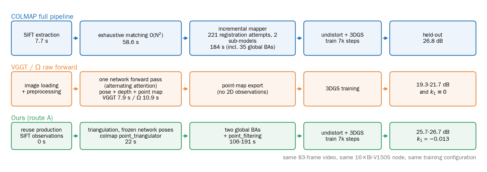
The official --use_ba of VGGT
(demo_colmap.py \(+\)
np_to_pycolmap.py) is also a three-stage “external 2D
tracks \(+\) pycolmap solve”, but the
3D initialization it feeds into Eq. [eq:ba] is
obtained by looking up the dense point map per pixel:
at the query-frame keypoint pixel \((u,v)\) it takes
points_3d[img][v][u] directly (the network output is a
dense per-pixel point map, so every pixel can be read and no
back-projection search is needed); the 2D observations in the remaining
frames are filled in by an external tracker, and the association graph
is registered with Point2D(xy, point3D_id) \(+\) Track. The structural
consequence is that the error of \(X_p\) is co-distributed with the
depth-head error, so the residual contains no geometric information
independent of depth and BA cannot pull \(X_p\) back to the correct place; its only
quality gates are soft: a confidence threshold (conf\(>1.2\)) and one projection pre-filter
(\(8\,\text{px}\)). We replace this
step wholesale by triangulation: \(X_p\) is generated by “frozen network poses
\(+\) ray intersection of external SIFT
inliers”, the depth head never enters \(X_p\), and we inherit three hard gates from
COLMAP (two-view RANSAC inliers, tri_min_angle, and
point_filtering on reprojection error / triangulation
angle). In the official chain the network is the object being
observed; in ours it is merely the arrangement of the rays, i.e. the
initialization. The substitution can be priced separately in
Table 1: omega\(\to\)omegatri changes only the
source of \(X_p\) (poses still frozen)
and gains \(+1.66\,\text{dB}\);
vggt\(\to\)vggttri gains \(+1.01\,\text{dB}\). Freeing poses and
intrinsics in BA then adds \(+2.78\,\text{dB}\)/\(+4.11\,\text{dB}\). The converse evidence
holds as well: grafting the network dense point map into the 3DGS
initialization costs \(2.80\)/\(3.20\,\text{dB}\) (§5.3).
Eq. [eq:ba] needs an association between 3D points and 2D observations — and those 3D points do not have to be the network’s. Step (b) regenerates the 3D points inside the ray bundle opened by the network poses, so 3D points and 2D observations share frame and scale by construction and no registration is needed; the network here provides the arrangement of the rays (\(R_j,t_j,K_j\)), i.e. the initialization, not the thing being measured. Conversely, attaching the network dense points to the SIFT observations (route C) requires mutual nearest-neighbour linking under \(\|{\pi(K_j,g_j,X_i)-k}\|<r\); then the information ceiling is set by the number of SIFT matches (\(\approx3\,035\) observations per frame here), essentially the same number route A gets for free, while the network’s own depth error (AbsRel \(0.01\)–\(0.06\)) is welded into the initialization of \(X_p\) and an extra \(\approx25\%\) BA scale drift has to be handled. We therefore did not adopt it.
After BA we transport the whole network point map into the BA world
frame with the Sim3 obtained from the camera-center sets before/after
BA, and write it into the model with track length \(0\) (track_len\(=0\) \(\Rightarrow\) zero residual \(\Rightarrow\) it does not even get a column
in the Jacobian), purely as a candidate for 3DGS initialization.
Experiments (§5.3) show this road should not
be taken: it costs \(2.8\)–\(3.2\,\text{dB}\).
To test whether external correspondence is really necessary we build
a control: take \(X_p\) from the
network point map, project each frame’s point map onto the other frames
with relative-depth mutual checking (\(\le2\%\)) and a confidence quantile
threshold, and self-generate \(\sim\!1.91\times10^6\) observations (\(202\,883\) points, mean track length \(9.4\)). These observations are
perfectly self-consistent with the network poses; the initial
cost is \(3.385\,\text{px}\) (inflated
by a bookkeeping frame error that BA digests itself) and drops to \(0.256\,\text{px}\) after BA with
CONVERGENCE — the lowest residual of all. And yet the
median pose rotation residual grows from \(1.2912^\circ\) to \(1.4296^\circ\), \(k_1\) is estimated as \(+0.0010\) while the COLMAP reference is
\(-0.0148\), i.e. the sign is wrong,
and held-out PSNR gains only \(0.05\,\text{dB}\) (\(19.99\!\to\!20.04\), within the observed
run-to-run variation).
Mechanism: bundle adjustment is a mechanism that constrains 3D geometry with 2D observations, and all of its information comes from the part of the observations that is independent of the current 3D and pose estimate. When the observations are generated by projecting the poses and depths themselves, the objective is already near-optimal at the current solution and the gradient pushes towards “more self-consistent”, not “more correct”; self-consistency itself is insensitive to scale, orientation and even global distortion (gauge freedoms), so the optimization amplifies the systematic bias. Engineering conclusion: any “self-supervised network BA” must introduce independent correspondence (SIFT/LoFTR/optical flow/IMU/temporal priors).
Table 7 and Fig. 13 separate three different meanings of “BA is expensive”. (i) COLMAP’s BA is expensive because it is called repeatedly: the default mapper takes \(184\text{s}\); with the BA iteration cap set to \(0/1\) and a looser function tolerance it takes \(87\text{s}\); the \(\approx97\text{s}\) difference is BA’s true share inside the mapper (\(53\%\)), accumulated from \(35\) global and \(\approx81\) local calls, \(1\text{s}\) on average; over the same period the mean reprojection error falls from \(1.648\,\text{px}\) to \(0.565\,\text{px}\), i.e. those \(97\text{s}\) buy geometric accuracy itself. (ii) Our single BA is slower than the whole BA-free mapper (\(136\text{s}\) vs \(87\text{s}\)), because its first round already operates on all \(503\,770\) residuals. (iii) But we call it twice, and the cost is linear in the number of observations (\(0.27/0.50/1.91\) million \(\to\) \(68/117/291\text{s}\)), so growth is predictable and there is no un-budgetable “sub-models / failed-registration retries” term.
All experiments run on a server with 16 Iluvatar BI-V150S cards
(32 GB each, monitored with ixsmi) at
root@10.9.11.38, software stack CoreX-5.0.0 (CUDA-10.2
compatibility layer) \(+\) PyTorch 2.10
(CoreX build). SfM tool: self-compiled COLMAP 4.0.4 (commit 65e6439e,
CUDA/ivcore11). 3DGS backend: Faster-GS[13] inside the nerficg framework
(port: appendix 10). Front-ends: official VGGT-1B (bf16,
518 crop) and VGGT-\(\Omega\)-1B (fp32,
512 balanced). LPIPS always uses VGG weights. The full pipeline is later
reproduced verbatim on an NVIDIA L20 (CUDA) platform with identical
configuration; appendix 11 reports the cross-platform
agreement.
The data is the extracted frame sequence c6183bb30c62 of
one driving video: \(83\) frames at
\(1920\times1080\). Training resolution
scale \(0.25\) (\(480\times270\)); every 8th frame by file
name is held out (TEST_STEP=8), i.e. \(11\) test and \(72\) training frames; \(7\,000\) training steps,
RANDOM_SEED=0, remaining hyper-parameters at their
defaults. All 20 arms share the same images, the same training
configuration and the same seed: the only variable is where
poses/intrinsics/initial points come from. Following the usual
SfM/3DGS convention, the front-end of every arm — matching,
network forward pass, triangulation and BA — sees all \(83\) frames including the \(11\) held-out ones (the reference model
likewise contains \(83\) images),
whereas the Gaussians are trained only on the \(72\) training frames and no arm is
model-selected against the held-out views. This is therefore a property
shared by all arms, not information one front-end receives and another
does not. Note that \(0.25/7\,000\) is
a floor configuration we chose deliberately for the ablation
matrix (quality just above the downstream visual bar, roughly ten
minutes end to end); Section 5.5
therefore re-runs the same front ends at medium and high training tiers
to test whether our conclusions are artefacts of the floor setting.
The feed-forward networks output \(k_1\equiv0\) whereas the COLMAP
SIMPLE_RADIAL solution gives \(k_1=-0.0148\). If every arm were trained on
COLMAP-undistorted images, the network arms would have pixels
inconsistent with their own model (the image was already bent by
somebody else’s \(k_1\)); if every arm
used raw distorted images, the network arms would lack the distortion
term. To avoid favouring one protocol we report both:
protocol A uses the raw distorted images everywhere
(SIMPLE_RADIAL model, 1920\(\times\)1080); protocol B
undistorts each arm with its own calibrated \(k_1\) via image_undistorter
(network arms use the \(k_1\) estimated
by their BA), i.e. the setting of a real COLMAP production line. The
headline conclusions hold in both protocols, and protocol B is the more
production-comparable one.
Early results carried two attribution risks: (1) some arms shared an
output directory (MODEL_NAME was not rewritten per arm);
(2) the dataset directory was rebuilt mid-experiment, so identically
named arms referred to different data. We therefore re-ran the entire
matrix: per-arm MODEL_NAME, per-arm dedicated GPU, one
concurrent wave, per-arm logs, with PSNR/SSIM/LPIPS, per-view PSNR,
Gaussian counts and wall clocks written out. Every number in this paper
comes from that single clean re-run; deviations from independent earlier
results are within \(\pm0.3\,\text{dB}\), which is the
run-to-run variation we observe at fixed seed.
Table 1 and Fig. 2 give all arms. Three observations.
(1) The feed-forward front-ends really lose a lot. In protocol A the bare VGGT forward pass reaches \(19.98\,\text{dB}\) and bare VGGT-\(\Omega\) \(21.35\,\text{dB}\) against \(25.77\,\text{dB}\) for the COLMAP reference; in protocol B they reach \(19.30/21.74\,\text{dB}\) against \(26.82\,\text{dB}\). \(\Omega\) is consistently better than VGGT (its pose residual is smaller to begin with: \(0.54^\circ\) vs \(1.29^\circ\)).
(2) One refinement stage closes the gap. Protocol A: \(\Omega\) rises from \(21.35\,\text{dB}\) to \(25.79\,\text{dB}\) (\(+4.44\,\text{dB}\)), surpassing the COLMAP reference by \(0.02\,\text{dB}\); VGGT rises from \(19.98\,\text{dB}\) to \(25.10\,\text{dB}\) (\(+5.12\,\text{dB}\)), residual \(-0.67\,\text{dB}\). Protocol B: \(\Omega\) \(21.74\!\to\!26.72\,\text{dB}\) (\(+4.98\,\text{dB}\)), \(0.10\,\text{dB}\) behind COLMAP’s \(26.82\,\text{dB}\) with better LPIPS (\(0.198\) vs \(0.203\)) and essentially equal SSIM (\(0.875\) vs \(0.877\)); VGGT \(19.30\!\to\!25.69\,\text{dB}\), residual \(-1.13\,\text{dB}\).
(3) The contributions of triangulation and BA are separable. Triangulation alone (frozen poses): \(+1.66\,\text{dB}\) for \(\Omega\), \(+1.01\,\text{dB}\) for VGGT — this part comes from replacing the network dense cloud with the true SIFT cloud; the net contribution of BA is \(+2.78\,\text{dB}\)/\(+4.11\,\text{dB}\). Repairing pose/intrinsics is thus the dominant gain.
| Arm | Front-end configuration | PSNR \(\uparrow\) | SSIM \(\uparrow\) | LPIPS \(\downarrow\) |
|---|---|---|---|---|
| cmap_raw | COLMAP full pipeline | 25.77 | 0.837 | 0.234 |
| omega | \(\Omega\) raw forward (network point cloud) | 21.35 | 0.674 | 0.326 |
| omegatri | \(\Omega\) + triangulation | 23.01 | 0.741 | 0.290 |
| omegatriba | \(\Omega\) + triangulation + BA (ours) | 25.79 | 0.843 | 0.219 |
| omegatriba_vgpts | \(\Omega\) + BA, but network dense points as init | 22.99 | 0.766 | 0.264 |
| vggt | VGGT raw forward (network point cloud) | 19.98 | 0.596 | 0.427 |
| vggttri | VGGT + triangulation | 20.99 | 0.641 | 0.372 |
| vggttriba | VGGT + triangulation + BA (ours) | 25.10 | 0.811 | 0.253 |
| vggttriba_vgpts | VGGT + BA, but network dense points as init | 21.90 | 0.709 | 0.341 |
| vggtgrid | Route B: self-generated tracks (no BA) | 19.99 | 0.600 | 0.407 |
| vggtgridba | Route B: self-generated tracks + BA | 20.04 | 0.601 | 0.403 |
Bold: our pipeline and the COLMAP reference. BA recovers \(+4.44\) dB for \(\Omega\) and \(+5.12\) dB for VGGT; grafting the network dense cloud back into the 3DGS initialization instead costs \(2.80\)/\(3.20\) dB.
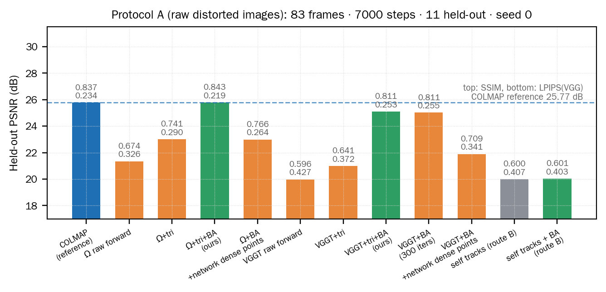
Table 2 uses the COLMAP model as reference (residuals after an Umeyama similarity absorbs scale and rigid degrees of freedom; trajectory diagonal \(10.782\text{m}\)). Before BA the median rotation residual is \(0.5404^\circ\) for \(\Omega\) and \(1.2912^\circ\) for VGGT, whereas two COLMAP solutions of the same data differ by only \(\approx0.04^\circ\). That figure is an inter-solution agreement: it says the reference is repeatable under our settings, not that it lies within \(0.04^\circ\) of the real cameras. We have no independent pose ground truth, so every residual quoted in this paper is taken relative to the COLMAP reference solution. After BA: \(\Omega\) reaches \(0.0701^\circ\) (\(7.7\times\) better, close to that inter-solution agreement), VGGT \(0.3212^\circ\) (\(4.0\times\)); camera-center residuals (relative to the trajectory diagonal) \(0.395\%\!\to\!0.096\%\) and \(0.579\%\!\to\!0.291\%\); mean reprojection \(1.443\,\text{px}\!\to\!0.386\,\text{px}\) and \(1.629\,\text{px}\!\to\!0.372\,\text{px}\) (COLMAP reference \(0.565\,\text{px}\): in the reprojection sense our solution is even better, because the reference retains distant outliers).
The intrinsics are repaired on the way, which is the other
half of the PSNR gain. Focal length: \(\Omega\) \(872.09\!\to\!852.55\) and VGGT \(872.34\!\to\!856.04\) against a reference
of \(850.73\) (the networks were \(+2.5\%\) too long); distortion \(k_1\): \(0\!\to\!-0.0133\) / \(0\!\to\!-0.0127\) against a reference of
\(-0.0148\). This is why “just train on
undistorted images” cannot save the bare network arms
(vggtu/omegau in Table 1 are even
lower): the network does not know that distortion exists, undistortion
can only be performed with somebody else’s \(k_1\), and that \(k_1\) is inconsistent with the network
poses. Only BA produces a self-consistent \((f,k_1)\) pair.
Pose-sensitivity experiment. To quantify “dB per degree” we inject artificial rotational perturbation into the COLMAP solution and retrain (protocol B): \(0^\circ\) \(26.82\,\text{dB}\), \(0.6^\circ\) \(20.29\,\text{dB}\), \(1.3^\circ\) \(17.55\,\text{dB}\), \(2.6^\circ\) \(16.34\,\text{dB}\) (Fig. 4, right). The slope for small perturbations is \(\approx-10.9\,\text{dB}/^\circ\). Projecting each arm’s measured rotation residual onto this curve predicts its loss: \(\Omega\) (\(0.54^\circ\)) predicts \(\approx-5.9\,\text{dB}\), measured \(-5.47\,\text{dB}\) (protocol B, \(21.74\) vs \(26.82\)); VGGT (\(1.29^\circ\)) predicts \(\approx-13\,\text{dB}\), measured \(-7.52\,\text{dB}\) — VGGT does better than predicted, because network error is coherent (a global rotation/scale bias), partly absorbable by 3DGS densification, whereas our perturbation is per-frame independent and therefore more toxic. This also explains why one global BA suffices: coherent error is exactly what a low-dimensional parameterization removes best.
Geometry side by side. Figure 3 places four geometries in one view: the network’s dense point map (\(\approx\)21.87M points per network, thinned to 80k in the figure; low-confidence points faded) requires no correspondence search by construction, yet VGGT’s cross-view 3-D point tracks break up far more often than \(\Omega\)’s, consistent with its \(1.29^\circ\) rotation residual. On the sparse side, our \(51.4\)k points and COLMAP’s \(32.7\)k points hug the camera path equally well, and the visual gap between them is far smaller than that between the two dense clouds—mirroring the \(+0.02\,\text{dB}\) of Table 1. Quality comes from the consistency of poses and observations, not from point density, in line with the graft verdict (\(-2.8\) to \(-3.2\,\text{dB}\), Table 1).
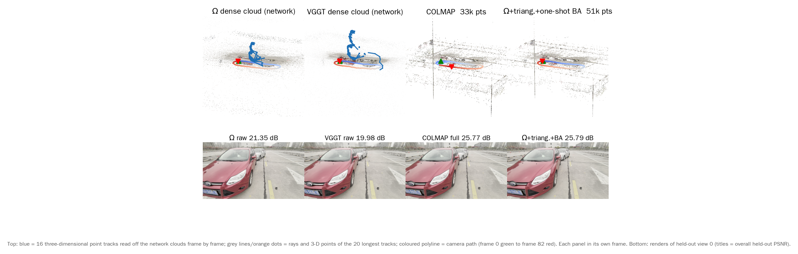
| Model | Stage | center residual \(\%\) | rotation p50 (\(^\circ\)) | rotation p95 (\(^\circ\)) | reproj. (px) | \(f\) | \(k_1\) |
|---|---|---|---|---|---|---|---|
| vggt | raw network output | 0.579 | 1.2912 | 2.464 | — | 872.34 | 0 |
| vggttri | + triangulation (frozen poses) | 0.579 | 1.2912 | 2.464 | 1.629 | 872.34 | 0 |
| vggttriba | + one global BA | 0.291 | 0.3212 | 0.665 | 0.372 | 856.04 | \(-\)0.0127 |
| omega | raw network output | 0.395 | 0.5404 | 1.573 | — | 872.09 | 0 |
| omegatri | + triangulation (frozen poses) | 0.395 | 0.5404 | 1.573 | 1.443 | 872.09 | 0 |
| omegatriba | + one global BA | 0.096 | 0.0701 | 0.199 | 0.386 | 852.55 | \(-\)0.0133 |
| cmap_raw | COLMAP reference (noise floor) | 0.040 | 0.040 | — | 0.565 | 850.73 | \(-\)0.0148 |
| vggtgridba | Route B (self-track BA) | — | 1.4296 (worse) | — | 0.256 | 865.63 | \(+\)0.0010 |
The \(k_1\) column shows that the network never estimates distortion (\(k_1\equiv 0\)); only BA recovers it: ground truth \(-\)0.0148, BA yields \(-\)0.0127/\(-\)0.0133.
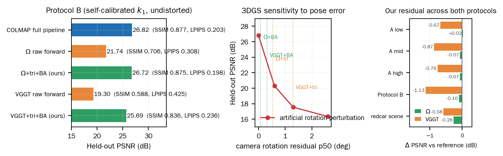
Bringing the network dense cloud back hurts. With
identical BA poses/intrinsics, changing only the 3DGS initialization
from the triangulated SIFT cloud to the network dense point map
(omegatriba_vgpts, vggttriba_vgpts) drops PSNR
from \(25.79\) to \(22.99\,\text{dB}\) (\(-2.80\)) and from \(25.10\) to \(21.90\,\text{dB}\) (\(-3.20\)). The poses of these two
arms are identical to the best arms — the effect is purely the point
cloud. This matches our 60-frame controlled observation that “\(\Omega\) has the highest training SSIM but
the lowest held-out PSNR”: dense network points buy overfitting
capacity, not generalization.
Self-generated correspondences do not help. Route B
(vggtgrid/vggtgridba): \(19.99\!\to\!20.04\,\text{dB}\) while the
pose residual worsens from \(1.2912^\circ\) to \(1.4296^\circ\), despite the lowest cost of
all (\(0.256\,\text{px}\); Fig. 5, right).
More BA iterations buy nothing. Raising the round-1
cap from \(100\) to \(300\) (vggttrilong) gives a
final cost of \(0.379011\,\text{px}\)
bit-identical to 100 iterations, the same \(0.3212^\circ\) pose residual, and PSNR
\(25.02\) vs \(25.10\,\text{dB}\), within the run-to-run
variation. Conversely lowering the cap to \(30\) gives a solution
bit-identical to 100 iterations (rotation difference \(\le6\times10^{-6\circ}\), camera-center
difference \(\le5.8\times10^{-7}\),
\(f\)/\(k_1\) identical) while saving \(85\text{s}\). The residual \(-0.67\,\text{dB}\) (VGGT, protocol A) is an
information limit, not an iteration limit: going further
requires more independent correspondence (dense matchers, temporal/IMU
priors).
Quantifying the information limit. The VGGT front-end feeds BA only \(93\,205\) independent observations (\(\Omega\): \(165\,147\); COLMAP reference: \(192\,880\)), i.e. \(2.8\) observations per 3D point against \(5.9\) for the reference, and its triangulated cloud has median track length \(2\) versus \(4\) (Fig. 5, left): half as much independent information is available to constrain the poses. Taking the slope of the perturbation curve near the origin, \(-10.9\,\text{dB}/^\circ\) (Fig. 4, right), as a local ruler, the difference between the post-BA rotation residuals of the two front-ends (\(0.3212^\circ\) vs \(0.0701^\circ\)) predicts an upper bound of \(2.7\,\text{dB}\), whereas the measured difference is only \(0.69\,\text{dB}\) (\(-0.67\) vs \(+0.02\)) — most of the residual pose error is already absorbed by 3DGS densification and rasterisation. Recovering the remaining \(\sim\!0.6\,\text{dB}\) therefore requires pushing the rotation residual towards \(\sim\!0.1^\circ\), i.e. raising the observations-per-point to the reference level (dense trackers/matchers such as LoFTR[11], or temporal/IMU priors), not more BA iterations.
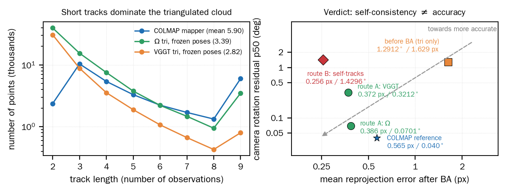
The main table summarises refinement as “BA \(\to\) filter \(\to\) BA \(\to\) final filter”, but the individual price of each step had so far been measured only as a sum. We keep the triangulated products fixed and stop the chain at different stages (Table [tab:stage]): S1 runs one global BA with no filtering at all; S2 additionally removes outliers by reprojection error and trains immediately; S3 adds a second BA round after S2 (no trailing filter); the full chain is the main-table configuration.
The two front-ends give opposite answers, and that contrast is itself the finding. The \(\Omega\) front-end has already converged at S1: \(25.84\,\text{dB}\), marginally above the full chain (\(+0.05\,\text{dB}\), within noise) — one BA round takes all the gain that is available on this data, the following filter throws away \(74\,421\!\to\!51\,498\) points for a quality change of \(-0.12\,\text{dB}\), and the second BA round merely recovers that loss (\(+0.01\,\text{dB}\)). The VGGT front-end behaves the other way round: S1 reaches only \(24.81\,\text{dB}\), adding a filter hurts (\(24.39\,\text{dB}\), \(-0.42\,\text{dB}\)), and only a following BA round restores the loss (\(24.89\,\text{dB}\)); the trailing filter then delivers \(25.10\,\text{dB}\). Net gain of “filter \(+\) second BA \(+\) trailing filter” over a single BA round: \(+0.29\,\text{dB}\) for \(21\text{s}\) of extra BA (\(148\!\to\!169\text{s}\)).
This yields a rule that transfers directly to production: outlier filtering is not a gain term by itself, it is pre-clean-up for the next BA round. With a good front-end (\(\Omega\), rotation residual \(0.54^\circ\)) both filtering and the second round are worth nothing; with a weaker one (VGGT, \(1.29^\circ\)) filtering alone is harmful (\(-0.42\,\text{dB}\)) and pays off only when paired with the following BA (net \(+0.29\,\text{dB}\)) — filtering deletes observations according to a projection model that has not been re-fitted yet. Operationally, filtering and the following BA must be issued as one atomic step. Note again that S1 has the most points (unfiltered) yet is no worse than the filtered arms — 3DGS tolerates the number of initial points but not geometric inconsistency (§5.3).
| Front-end | Refinement stage | Sparse points | PSNR \(\uparrow\) | SSIM \(\uparrow\) | LPIPS \(\downarrow\) | \(\Delta\)PSNR vs full chain |
|---|---|---|---|---|---|---|
| \(\Omega\) front-end | S1: one global BA (no outlier filtering) | 74,421 | 25.84 | 0.850 | 0.215 | \(+0.05\) |
| \(\Omega\) front-end | S2: BA + outlier filtering | 51,498 | 25.67 | 0.842 | 0.220 | \(-0.12\) |
| \(\Omega\) front-end | S3: S2 + a second BA round | 51,498 | 25.80 | 0.843 | 0.220 | \(+0.01\) |
| \(\Omega\) front-end | Full chain (main table: S3 + trailing filter) | 51,377 | 25.79 | 0.843 | 0.219 | \(\pm\)0.00 |
| VGGT front-end | S1: one global BA (no outlier filtering) | 47,872 | 24.81 | 0.804 | 0.260 | \(-0.29\) |
| VGGT front-end | S2: BA + outlier filtering | 33,424 | 24.39 | 0.795 | 0.266 | \(-0.71\) |
| VGGT front-end | S3: S2 + a second BA round | 33,424 | 24.89 | 0.810 | 0.254 | \(-0.21\) |
| VGGT front-end | Full chain (main table: S3 + trailing filter) | 33,162 | 25.10 | 0.811 | 0.253 | \(\pm\)0.00 |
The nature of the main-table setting has to be stated up front: \(0.25\) resolution \(+\ 7\,000\) steps, together with the fast production script on the COLMAP side, is a configuration we chose deliberately as the minimum: it keeps the whole chain (front end \(+\) training \(+\) rendering \(+\) evaluation) inside roughly ten minutes while still meeting the visual-quality bar required downstream, which is exactly what an ablation matrix that must be re-run repeatedly needs. The price is an absolute PSNR far below the 3DGS-paper convention, which raises a question we must answer: is the small gap between our chain and COLMAP an artefact of the floor setting? Under-fitting depresses every arm at once and can hide differences that only surface once training is adequate.
We therefore raised the 3DGS training tier while leaving every front-end product untouched (poses, intrinsics and sparse point cloud byte-identical): medium \(=0.5\) resolution \(/\ 20\,000\) steps, high \(=1.0\) native resolution \(/\ 30\,000\) steps (Table 3, Figure 6 left).
Absolute PSNR is not comparable across tiers: going from the low to the high tier multiplies the held-out pixel grid by \(16\times\), so detail errors are scored more strictly and even the COLMAP reference itself falls monotonically — PSNR \(25.77\!\to\!25.31\!\to\!24.65\,\text{dB}\), SSIM \(0.837\!\to\!0.822\!\to\!0.820\), LPIPS \(0.234\!\to\!0.282\!\to\!0.352\). The only comparable quantity is the within-tier difference \(\Delta=\text{arm}-\text{COLMAP}_{\text{same tier}}\), which we therefore report as an explicit column of Table 3; Figure 6 (left) plots exactly those seven \(\Delta\) curves over the three tiers.
Three conclusions follow. (i) The BA arms stay in the reference’s immediate neighbourhood at all three tiers: \(\Omega\) gives \(+0.02\,/\,-0.07\,/\,-0.07\,\text{dB}\) and VGGT \(-0.67\,/\,-0.87\,/\,-0.76\,\text{dB}\), never more than \(0.9\,\text{dB}\) away. The near-parity in the main table is therefore neither an artefact of the floor setting nor a coincidence that only appears once training is adequate. (ii) The \(4\sim7\,\text{dB}\) deficit of the raw forward pass is never closed by training harder: \(\Omega\) \(-4.42\,/\,-4.96\,/\,-4.51\,\text{dB}\) and VGGT \(-5.79\,/\,-6.96\,/\,-5.99\,\text{dB}\); quadrupling both the pixel count and the iterations only measures the structural bias more precisely instead of removing it (the high tier is slightly better than the medium one, since \(0.5\) sampling happens to sit at the most unfavourable point of the error curve). (iii) Triangulation without BA plateaus at \(-2.76\,/\,-3.31\,/\,-3.24\,\text{dB}\) (\(\Omega\)) and \(-4.78\,/\,-5.27\,/\,-4.89\,\text{dB}\) (VGGT): replacing the point cloud recovers roughly a third to a half, the rest has to be extracted from the poses and intrinsics by BA. A single arm costs \(1\,518\!\sim\!2\,006\text{s}\) at the high tier versus \(155\!\sim\!219\text{s}\) at the low one, which is why the ablation matrix runs at the low tier; the medium and high tiers are therefore reported as robustness ablations only and do not replace the main table: every headline number in the abstract and in the text stays at the low-tier (main-table) setting, and the higher tiers are reported through Table 3 and Figure 6; wall-clock figures in the table come from concurrent runs on the same machine and are order-of-magnitude only (e.g. the medium-tier VGGT \(+\) triangulation arm shows \(1\,488\text{s}\), clearly slowed by its concurrent wave, whose same-wave control finished in \(731\text{s}\)).
| front-end configuration | Training tier | PSNR \(\uparrow\) | SSIM \(\uparrow\) | LPIPS \(\downarrow\) | \(\Delta\)PSNR vs same-tier COLMAP |
|---|---|---|---|---|---|
| COLMAP | low: 0.25x / 7k steps | 25.77 | 0.837 | 0.234 | \(+0.00\) |
| \(\Omega\) raw forward | low: 0.25x / 7k steps | 21.35 | 0.674 | 0.326 | \(-4.42\) |
| \(\Omega\) \(+\) triangulation | low: 0.25x / 7k steps | 23.01 | 0.741 | 0.290 | \(-2.76\) |
| \(\Omega\) \(+\) triangulation \(+\) BA | low: 0.25x / 7k steps | 25.79 | 0.843 | 0.219 | \(+0.02\) |
| VGGT raw forward | low: 0.25x / 7k steps | 19.98 | 0.596 | 0.427 | \(-5.79\) |
| VGGT \(+\) triangulation | low: 0.25x / 7k steps | 20.99 | 0.641 | 0.372 | \(-4.78\) |
| VGGT \(+\) triangulation \(+\) BA | low: 0.25x / 7k steps | 25.10 | 0.811 | 0.253 | \(-0.67\) |
| COLMAP | medium: 0.5x / 20k steps | 25.31 | 0.822 | 0.282 | \(+0.00\) |
| \(\Omega\) raw forward | medium: 0.5x / 20k steps | 20.35 | 0.634 | 0.388 | \(-4.96\) |
| \(\Omega\) \(+\) triangulation | medium: 0.5x / 20k steps | 22.00 | 0.691 | 0.361 | \(-3.31\) |
| \(\Omega\) \(+\) triangulation \(+\) BA | medium: 0.5x / 20k steps | 25.24 | 0.824 | 0.270 | \(-0.07\) |
| VGGT raw forward | medium: 0.5x / 20k steps | 18.35 | 0.568 | 0.472 | \(-6.96\) |
| VGGT \(+\) triangulation | medium: 0.5x / 20k steps | 20.04 | 0.609 | 0.441 | \(-5.27\) |
| VGGT \(+\) triangulation \(+\) BA | medium: 0.5x / 20k steps | 24.44 | 0.784 | 0.310 | \(-0.87\) |
| COLMAP | high: 1.0x / 30k steps | 24.65 | 0.820 | 0.352 | \(+0.00\) |
| \(\Omega\) raw forward | high: 1.0x / 30k steps | 20.14 | 0.682 | 0.440 | \(-4.51\) |
| \(\Omega\) \(+\) triangulation | high: 1.0x / 30k steps | 21.41 | 0.714 | 0.425 | \(-3.24\) |
| \(\Omega\) \(+\) triangulation \(+\) BA | high: 1.0x / 30k steps | 24.58 | 0.822 | 0.341 | \(-0.07\) |
| VGGT raw forward | high: 1.0x / 30k steps | 18.66 | 0.654 | 0.505 | \(-5.99\) |
| VGGT \(+\) triangulation | high: 1.0x / 30k steps | 19.76 | 0.671 | 0.489 | \(-4.89\) |
| VGGT \(+\) triangulation \(+\) BA | high: 1.0x / 30k steps | 23.89 | 0.791 | 0.376 | \(-0.76\) |
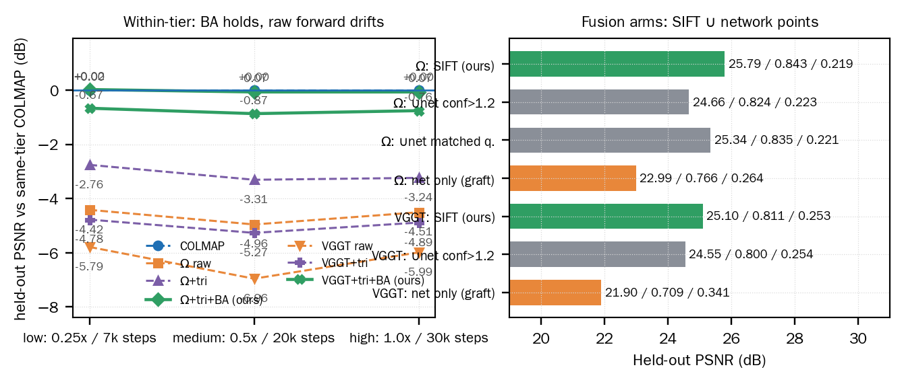
The graft ablation in Section 5.3 replaced the triangulated cloud with the network point map, which hurts. Replacement is also the crudest possible use, and the two error sources are in fact complementary: triangulation noise scales like \(1/\text{baseline}\) and blows up for adjacent video frames, while network depth is very stable exactly in textured, wide-baseline regions and fails only in texture-less/over-exposed/occluded ones. We therefore implemented and tested fusion arms: BA poses and intrinsics stay fixed, and only the 3DGS initialisation becomes
\[\begin{equation} \mathcal{P}_{\text{init}} \;=\; \mathcal{P}_{\text{SIFT}}^{\text{BA}} \;\cup\; \big\{\mathrm{Sim3}\big(X_{\text{net}}(u,v)\big)\;\big|\; c(u,v) > \tau \big\}, \end{equation}\]
where network points are obtained by per-pixel back-projection of the
depth, transported into the BA world frame by the Umeyama similarity
between the pre- and post-BA camera centres, randomly downsampled to
\(1\,\text{M}\), and inserted with
empty tracks (they have no 2D observations, so they never enter
the residual of Eq. [eq:ba]; they only seed densification), while
SIFT points keep their 2D tracks verbatim. The threshold \(\tau\) is \(1.2\) (the official confidence filter).
Because confidence units are not comparable across networks (\(\Omega\) keeps \(87.9\%\) of pixels at \(\tau{=}1.2\), VGGT only \(35.1\%\)), we additionally run a
quantile-matched control omegafuseq (\(\tau{=}22.08\), bringing \(\Omega\)’s retention to the same \(35.1\%\)), which removes "more injection
causes more harm" as a confound.
Table 4 and Figure 6 right give three clean results:
(1) Monotone ordering: SIFT \(\cup\) network \(>\) pure network, but \(<\) pure SIFT. \(\Omega\): \(25.79\to24.66\to22.99\,\text{dB}\); VGGT: \(25.10\to24.55\to21.90\,\text{dB}\). The network cloud clearly carries information (the union beats pure network points by \(+1.67\)/\(+2.65\,\text{dB}\)), but on this scene its contribution is far outweighed by the dilution of the SIFT initialisation.
(2) Dilution has a measurable price. \(1\,\text{M}\) network points against \(51\text{k}\) SIFT points (\(\Omega\)) / \(33\text{k}\) (VGGT) put a cloud of drifting points at the densification start: final Gaussian count \(634\text{k}\!\to\!1\,124\text{k}\) (\(+77\%\)), training wall-clock \(179\text{s}\!\to\!313\text{s}\) (\(+75\%\)), and the quantile-matched arm still needs \(1\,164\text{k}/435\text{s}\) — for lower quality. SSIM/LPIPS move the same way (\(0.843\!\to\!0.824\), \(0.219\!\to\!0.223\)), so this is neither a metric preference nor "more compute for more quality".
(3) Injection volume is the main source of harm, but aligning
quantiles still yields no positive gain. Raising \(\Omega\)’s threshold to \(\tau{=}22.08\) (omegafuseq,
retention matched to VGGT’s \(35.1\%\))
recovers \(+0.68\,\text{dB}\) to \(25.34\) and brings SSIM/LPIPS almost back
to pure-SIFT levels (\(0.835/0.221\) vs
\(0.843/0.219\)): roughly two thirds of
the \(-1.13\,\text{dB}\) comes from
pouring in low-confidence drift as well. But matching quantiles still
does not catch up with pure SIFT: \(\Delta=-0.45\,\text{dB}\) (\(\Omega\)) and \(-0.55\,\text{dB}\) (VGGT), the same
magnitude. The mechanism is that geometry injected as
observations without corresponding 2D observations is treated by
3DGS as "free ellipsoids that can be fitted from any viewing direction",
and on held-out views it is necessarily fitted to the wrong place — a
weakened version of the same mechanism as the graft arm, not simply "too
many points".
The practical recommendation is therefore: keep the network geometry at the pose/initialisation layer and do not connect it to the 3DGS initialisation. Exploiting the complementarity properly means turning the dense geometry into a weighted soft constraint rather than a point observation (adding \(\lambda\rho(\|X-\mathrm{proj}(X_{\text{net}})\|^2)\) to the training objective, or modulating the densification threshold only where \(c>\tau\)), which we leave to future work.
| Fusion arm | conf | retention | SIFT points | network pts | PSNR \(\uparrow\) | SSIM \(\uparrow\) | LPIPS \(\downarrow\) |
|---|---|---|---|---|---|---|---|
| omegatriba | - | - | 51,377 | 0 | 25.79 | 0.843 | 0.219 |
| omegafuse | 1.2 | 0.879 | 51,377 | 1,000,000 | 24.66 | 0.824 | 0.223 |
| omegafuseq | 22.08 | 0.350 | 51,377 | 1,000,000 | 25.34 | 0.835 | 0.221 |
| omegatriba_vgpts | - | - | 0 | 1,000,000 | 22.99 | 0.766 | 0.264 |
| vggttriba | - | - | 33,162 | 0 | 25.10 | 0.811 | 0.253 |
| vggtfuse | 1.2 | 0.351 | 33,162 | 1,000,000 | 24.55 | 0.800 | 0.254 |
| vggttriba_vgpts | - | - | 0 | 1,000,000 | 21.90 | 0.709 | 0.341 |
The main matrix uses a single 83-frame driving video (weakly textured ground, occluding vehicles). To rule out scene dependence we re-ran all seven links on a second, independent clip (redcar, \(191\) frames at \(1920\!\times\!1080\), shipped with its own exhaustive SIFT database and a third-party COLMAP 3.x model) using a training tier parameter-for-parameter identical to the main table (\(0.25\) resolution \(/\ 7\,000\) steps, same machine, same concurrent wave, same protocol). Table [tab:scene] and Figure 7 (left) give the result.
The qualitative conclusions replicate verbatim; the magnitudes differ. Raw forward input lands \(-2.28\,\text{dB}\) (\(\Omega\)) and \(-3.80\,\text{dB}\) (VGGT) below the reference — about half the main-scene deficit (\(-4.42\)/\(-5.79\,\text{dB}\)). Triangulation alone moves \(\Omega\) barely at all (\(22.79\!\to\!22.83\), \(+0.04\,\text{dB}\)) and VGGT by \(+0.65\,\text{dB}\); adding one global BA brings both arms to \(-0.26\,\text{dB}\) and \(-0.58\,\text{dB}\) — \(+1.98\,\text{dB}\) (\(\Omega\)) and \(+2.57\,\text{dB}\) (VGGT) on top of their own triangulated inputs, \(+2.02\)/\(+3.22\,\text{dB}\) on top of raw forward. All three main-table statements hold: raw forward is not directly usable, triangulation recovers only part, and BA is what returns quality to the reference’s level. The weakest arm repeated three times gives \(21.89/21.92/21.93\,\text{dB}\) (\(\pm0.04\,\text{dB}\)), so the ordering is not jitter.
The marginal value of triangulation is scene-dependent; that of BA is not. Triangulation alone is worth \(+1.66\,\text{dB}\) for \(\Omega\) on the main scene but \(+0.04\,\text{dB}\) here, whereas the BA step is worth \(+2.78\)/\(+1.98\,\text{dB}\) (\(\Omega\)) and \(+4.11\)/\(+2.57\,\text{dB}\) (VGGT) on the two scenes. The mechanism is the same as in §5.1: triangulation replaces an initialisation that is co-distributed with the depth head, so its payoff depends on how depth error and 2D noise compare in a given scene (redcar is richly textured with wide baselines, so the network depth is already decent), while BA repairs poses and intrinsics, and any front-end that leaves \(k_1\equiv0\) and a biased focal length benefits by a stable amount. Triangulation is the step that gives BA the right observability; BA is the payoff.
One difference we must report honestly. The COLMAP reference here is a third-party model with an OPENCV camera (\(f_x=1833.78\neq f_y=1637.84\), \(12\%\) apart), while all our network arms use SIMPLE_RADIAL (\(f_x=f_y\)). This mismatch cannot be compensated by BA under SIMPLE_RADIAL, so the remaining \(1.22\!\sim\!1.26^\circ\) rotation residual after BA (versus \(0.0701^\circ\) for \(\Omega\) on the main scene) should be read as a limitation of the camera-model family, not as unconverged BA: the two independent front-ends agree with each other to \(0.287^\circ\) with camera centres \(0.193\%\) of the trajectory diagonal apart (Fig. 7, right) — they converge to the same geometry, which simply does not fit inside the reference’s parameterisation. Practical corollary: align camera-model families before comparing pose residuals across datasets, otherwise the residual measures model mismatch rather than accuracy.
| arm | front-end configuration | Sparse points | rotation residual p50 \((^\circ)\) | reproj. (px) | PSNR \(\uparrow\) | SSIM \(\uparrow\) | LPIPS \(\downarrow\) | \(\Delta\)PSNR vs same-scene COLMAP |
|---|---|---|---|---|---|---|---|---|
| rc_cmap | COLMAP | 37,995 | — | 1.047 | 25.07 | 0.690 | 0.329 | \(+0.00\) |
| rc_omega | \(\Omega\) raw forward | 487,313 | 1.4927 | — | 22.79 | 0.582 | 0.358 | \(-2.28\) |
| rc_omegatri | \(\Omega\) \(+\) triangulation | 67,375 | 1.4927 | 1.470 | 22.83 | 0.579 | 0.407 | \(-2.24\) |
| rc_omegatriba | \(\Omega\) \(+\) triangulation \(+\) BA | 50,840 | 1.2578 | 0.704 | 24.81 | 0.689 | 0.319 | \(-0.26\) |
| rc_vggt | VGGT raw forward | 486,423 | 1.3422 | — | 21.27 | 0.514 | 0.415 | \(-3.80\) |
| rc_vggttri | VGGT \(+\) triangulation | 56,616 | 1.3422 | 1.569 | 21.92 | 0.532 | 0.454 | \(-3.15\) |
| rc_vggttriba | VGGT \(+\) triangulation \(+\) BA | 41,595 | 1.2206 | 0.671 | 24.49 | 0.667 | 0.341 | \(-0.58\) |
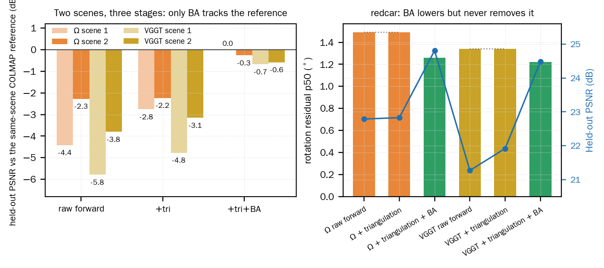
A third and a fourth scene (Table 5, Fig. 8; re-run on the L20 with the main
table’s tier, which reproduces the Iluvatar numbers to \(\le\)0.21 , appendix 11) were meant as
routine replication. On twocars — an 83-frame handheld
orbit around two parked cars, i.e. a closed loop — the COLMAP
arm instead finished \(2.71\,\text{dB}\) below our own
chain and \(0.35\,\text{dB}\) below
even the bare \(\Omega\) forward pass,
so we examined the reference instead of our chain.
Nothing announces the failure. The mapper registers
\(83/83\) frames, returns \(26\,316\) points at \(0.691\,\text{px}\) mean reprojection,
exports cleanly, loads in nerficg and trains. Four things are wrong. (i)
Inside \(30\) global BA rounds Ceres
reports Linear solver failure \(42\) times — a singular Cholesky
factorisation of the normal equations, i.e. a rank-deficient sub-problem
it had to regularise around (Table 6); the
well-behaved traffic scene reports \(0\). (ii) The path itself is four
near-collinear runs joined by teleports (Fig. 8a), whereas
a hand-held orbit is a closed curve. (iii) The per-frame camera step is
not monotone: normalised steps span \(10^{-4}\)–\(0.24\) with \(\mathrm{cv}=4.12\) against \(0.27\) for our chain (Fig. 8b). Uniform sampling forces the
physical floor \(\approx1/N\); the
reference sits at a quarter of that floor for sixty frames and then
jumps \(\sim\)100\(\times\) twice — no handheld operator moves
like that. (iv) Mapping costs \(681\text{s}\) against \(220\text{s}\) on traffic with
one image fewer and the same feature budget: the extra time is
retry-and-regularise around a singular system, which is also why it buys
nothing.
Held-out PSNR cannot settle this: if the reference geometry is wrong,
the arm that disagrees with it loses points, and “which geometry do the
images support?” stays open. Neither can each model’s own reprojection
error — the reference reports \(0.691\,\text{px}\) on its own points, and
route B already taught us that the most self-consistent solution can be
the least correct (§3.3). We therefore score every candidate
against evidence that no reconstruction produced: the
two_view_geometries table of the database, i.e. SIFT inlier
pairs accepted by two-view geometric verification, a verdict computed by
the matcher from image data alone and never touching mapping. For each
image pair (frame gap \(\ge 8\) so that
a baseline exists; \(767\) pairs, \(\le\)300 inlier pairs each, \(155\,843\) observations) we triangulate
each inlier pair by DLT under the candidate’s own cameras and
measure the reprojection residual, requiring cheirality and a
triangulation angle \(>0.5^\circ\).
Two design decisions keep the comparison honest: lens distortion is
ignored for every candidate (pinhole-only scoring), so that an
OPENCV arm with eight parameters is not rewarded over a SIMPLE_RADIAL
arm with four; and because the fraction of triangulable observations
differs between candidates (\(0.84\)
for the reference, \(0.65\) for ours —
the closing loop puts more of the shared matches behind our cameras),
all statistics are computed on the paired subset of \(86\,350\) observations triangulable under
all five distinct camera models (the raw and \(+\)tri rows of a network share one
model).
The verdict is unambiguous and it does not favour the reference: \(1.642\,\text{px}\) p50 with p90 \(=25.1\,\text{px}\) and \(31.5\%\) of observations above \(4\,\text{px}\) for COLMAP, against \(0.636\,\text{px}\) / \(1.81\,\text{px}\) / \(2.0\%\) for the \(\Omega\) chain and \(0.579\,\text{px}\) / \(2.03\,\text{px}\) / \(2.3\%\) for the \(V\) chain; paired per-observation, the \(\Omega\) arm beats the reference on \(82.9\%\) and the \(V\) arm on \(73.7\%\) of the shared evidence. The control scene behaves as it should: \(0.245\,\text{px}\) versus \(0.232\,\text{px}\), win rate \(59.1\%\) — a tie, so the test does not manufacture a verdict on its own. Read together with Table 5, the images side with the arm that also reconstructs better, and the \(+2.71\,\text{dB}\) is not our chain beating a straw man but a symptom of the same underlying defect.
Same chain, other network. Re-running the entire
protocol with the VGGT-1B front-end turns the two-clip replication into
a \(2\times2\) across scenes and
networks (bottom three rows of each block of Table 5). VGGT-1B is
the weaker front-end at both clips — its raw poses sit at \(0.85^\circ\) against \(\Omega\)’s \(0.18^\circ\) on traffic and
its verdict p50 is \(2.01\,\text{px}\)
against \(1.00\,\text{px}\) — and its
raw arm is the worst of all seven: \(-6.31\,\text{dB}\) on traffic,
and \(-1.77\,\text{dB}\) on
twocars, below even the collapsed reference.
Route A repairs it with the same two steps: on traffic,
\(V\)+tri+BA lands at \(26.55\,\text{dB}\) (\(-0.28\,\text{dB}\) from the reference,
verdict \(0.255\,\text{px}\), win rate
\(51.4\%\) — statistically tied),
recovering \(+6.03\,\text{dB}\) of the
raw deficit; on twocars it recovers \(+3.68\,\text{dB}\) over its own raw pass to
\(22.99\,\text{dB}\) (\(+1.91\,\text{dB}\) over the reference) and
posts the strongest verdict of any candidate, \(0.579\,\text{px}\) with \(2.3\%\) of observations above \(4\,\text{px}\) (\(73.7\%\) paired win rate against the
reference). The repair is thus not an \(\Omega\)-specific patch; it scales with the
damage (\(+3.68\)/\(+6.03\,\text{dB}\) recovered for \(V\) against \(+2.36\)/\(+3.14\,\text{dB}\) for \(\Omega\)), and wherever the reference is
itself healthy both networks finish within \(0.3\,\text{dB}\) of it. The bill of the
\(V\) chain is dominated by the same BA
stage (\(51\)+\(12\text{s}\) on twocars, \(107\)+\(41\text{s}\) on traffic; the
\(518\)-resolution forward pass itself
costs \(7.7\text{s}\)), for a front-end
total of \(87\text{s}\) against
COLMAP’s \(681\text{s}\) and \(179\text{s}\) against \(220\text{s}\). Figs. 9 and 10 carry
the same ordering from numbers to pixels and geometry: on
twocars the collapsed reference renders as blurred as
either raw pass while both BA chains re-sharpen the car body, four
network trajectories lie on one closed orbit against the reference’s
open four-segment path, and on that scene only the BA chains produce a
sparse, compact initial cloud.
Why the feed-forward pass survives it. The collapse lives in the incremental loop: closed-loop video makes the closing frames jointly explainable by several sub-graphs, local BA problems become near-rank-deficient, and each retry perturbs the neighbours. A single forward pass has no such stage — all frames are aggregated at once, nothing is “registered”, and the model’s implicit smoothness puts the trajectory at the \(1/N\) floor (Fig. 8b, \(\mathrm{cv}=0.27\)). Our chain inherits that trajectory and refines it exactly once against external SIFT evidence, with zero LM failures and \(178\text{s}\) of front-end against \(692\text{s}\) (\(3.9\times\)).
What this does not show. (i) There is no
ground-truth pose for either clip; the arbitration measures consistency
with verified image correspondences, not accuracy — and those
correspondences share the SIFT keypoints of both chains, so a SIFT-wide
systematic error would be invisible to it (the two-view matrices,
however, are estimated per pair and do not inherit either candidate’s
poses). (ii) traffic is the counterexample we report
deliberately: \(0\) LM failures, a
quality tie (\(26.92\) vs \(26.83\), \(+0.09\,\text{dB}\)) and no speed advantage
(\(234\text{s}\) vs \(241\text{s}\)). (iii) This is not
the classical failure mode of incremental SfM: no frame was dropped and
no sub-model was produced. The honest statement is therefore
scene-dependent, not “COLMAP is broken”: incremental mapping can degrade
silently on closed-loop video, and deleting the incremental stage
removes that exposure. (iv) A practical corollary at zero cost: count
Linear solver failure lines and compute the step-profile cv
of any mapper output before feeding it to a downstream trainer — both
are readable from artifacts that already exist, and both flagged this
case.
| arm | \(\Delta\)rot. \((^\circ)\) | verdict | \(>\)4px | PSNR | SSIM | LPIPS | \(\Delta\)dB |
|---|---|---|---|---|---|---|---|
twocars — 83
frames, handheld closed-loop orbit |
|||||||
| COLMAP | — | 1.642 | 31.5 | 21.08 | 0.735 | 0.374 | \(+0.00\) |
| \(\Omega\) raw | \(83.2\) | 1.643 | 26.8 | 21.43 | 0.717 | 0.269 | \(+0.35\) |
| \(\Omega\)+tri | \(83.2\) | 1.643 | 26.8 | 21.10 | 0.710 | 0.320 | \(+0.02\) |
| \(\Omega\)+tri+BA | \(83.2\) | 0.636 | 1.9 | 23.79 | 0.813 | 0.254 | \(+2.71\) |
| \(V\) raw | \(83.1\) | 4.424 | 54.7 | 19.31 | 0.619 | 0.343 | \(-1.77\) |
| \(V\)+tri | \(83.1\) | 4.424 | 54.7 | 19.37 | 0.626 | 0.382 | \(-1.71\) |
| \(V\)+tri+BA | \(83.2\) | 0.579 | 2.3 | 22.99 | 0.777 | 0.281 | \(+1.91\) |
traffic — 82
frames, driving clip (control) |
|||||||
| COLMAP | — | 0.245 | 3.8 | 26.83 | 0.865 | 0.236 | \(+0.00\) |
| \(\Omega\) raw | \(0.177\) | 0.998 | 15.1 | 23.78 | 0.763 | 0.231 | \(-3.05\) |
| \(\Omega\)+tri | \(0.177\) | 0.998 | 15.1 | 23.79 | 0.764 | 0.286 | \(-3.04\) |
| \(\Omega\)+tri+BA | \(\mathbf{0.065}\) | 0.232 | 3.8 | 26.92 | 0.880 | 0.190 | \(+0.09\) |
| \(V\) raw | \(0.851\) | 2.008 | 20.1 | 20.52 | 0.609 | 0.351 | \(-6.31\) |
| \(V\)+tri | \(0.851\) | 2.008 | 20.1 | 21.10 | 0.647 | 0.396 | \(-5.73\) |
| \(V\)+tri+BA | \(0.127\) | 0.255 | 3.8 | 26.55 | 0.861 | 0.219 | \(-0.28\) |
| chain | total | feat | match | map | net | post | BA | LM | reg. |
|---|---|---|---|---|---|---|---|---|---|
twocars — 83
frames, handheld closed-loop orbit |
|||||||||
| COLMAP | 692 | 6 | 5 | 681 | — | — | 30 | 42 | 83/83 |
| route A | 178 | 6 | 5 | — | 60 | 107 | 1 | 0 | 83/83 |
traffic — 82
frames, driving clip (control) |
|||||||||
| COLMAP | 241 | 5 | 16 | 220 | — | — | 30 | 0 | 82/82 |
| route A | 234 | 5 | 16 | — | 77 | 136 | 1 | 0 | 82/82 |
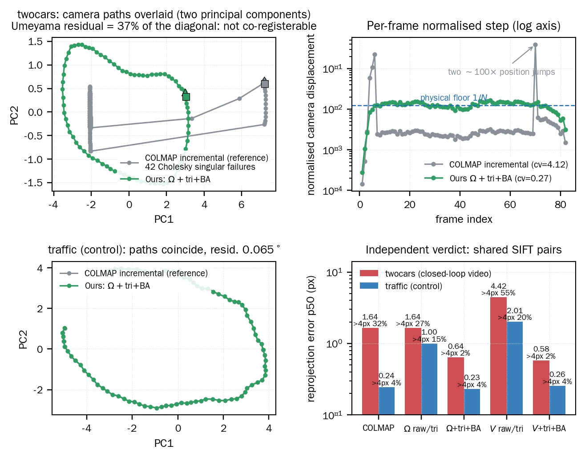
twocars, 83 frames, L20). a: the
two camera paths overlaid after Umeyama; the fit residual is \(37\%\) of the trajectory diagonal, i.e. the
two paths are not co-registerable — the reference consists of four
near-collinear runs joined by jumps, ours is the closed orbit the clip
was shot as. b: per-frame normalised camera step (log
axis). Uniform sampling implies a flat profile at \(1/N\) (dashed); our chain sits on that
floor (\(\mathrm{cv}=0.27\)), the
reference stalls near a quarter of it and jumps \(\sim\)100\(\times\) twice (\(\mathrm{cv}=4.12\)). c:
control scene traffic — the same two chains coincide to
\(0.065^\circ\). d:
reconstruction-independent verdict (§5.9): shared
SIFT two-view inlier pairs, DLT-triangulated under each of the five
distinct camera models spanning both networks, paired subset; bars are
p50 reprojection with the fraction above \(4\,\text{px}\) underneath.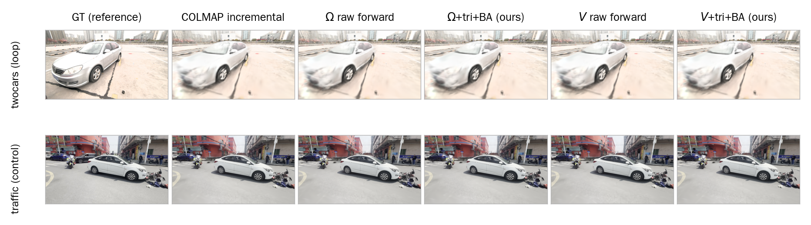
twocars: the collapsed COLMAP reference renders as blurred
as either raw forward pass — wrong geometry earns no credit for being
“the reference” — while both BA chains re-sharpen the car body and the
curb lines. Bottom traffic (control): all
five arms sit close to the ground truth and to each other; this is what
a healthy scene looks like for every chain.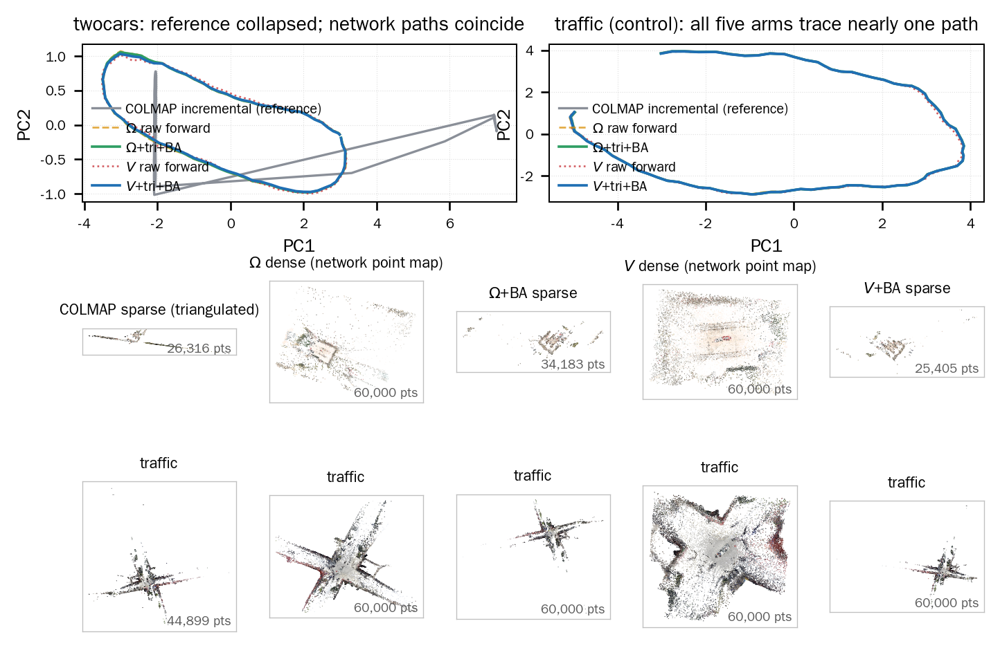
twocars the reference is the open four-segment path (gray)
while all four network paths lie on one closed orbit; on
traffic all five coincide. Middle/Bottom:
the initial point clouds fed to 3DGS (RGB, PCA view): the collapsed
reference is a near-planar sliver; the raw network point maps are dense
but carry their own scale and a low-confidence haze; the BA clouds are
sparse, compact and clean — the kind of initialisation the point-cloud
ablation (§5.3) shows to matter.Fig. 11 gives the per-view PSNR of the 11 held-out views. The curve shapes of the six arms agree (view 0 easiest, view 6 hardest) but the spacing widens with difficulty: on the hardest view COLMAP gives \(23.29\,\text{dB}\), \(\Omega\)+BA \(24.40\,\text{dB}\), \(\Omega\)+triangulation \(22.03\,\text{dB}\), bare \(\Omega\) \(19.18\,\text{dB}\), bare VGGT \(17.80\,\text{dB}\). The farther a held-out view lies from the training trajectory, the larger the leverage of pose/intrinsics error — consistent with the geometry of Eq. [eq:ba] (pixel displacement of an extrapolated view \(\propto f\cdot\Delta\theta\), so an over-long focal length and an angular bias add up in the same direction). The qualitative comparison in Fig. 12 shows the same: the floaters and “painted-wall” overexposure of the bare forward passes essentially disappear after BA, and on hard views \(\Omega\)+BA is hard to distinguish from COLMAP.
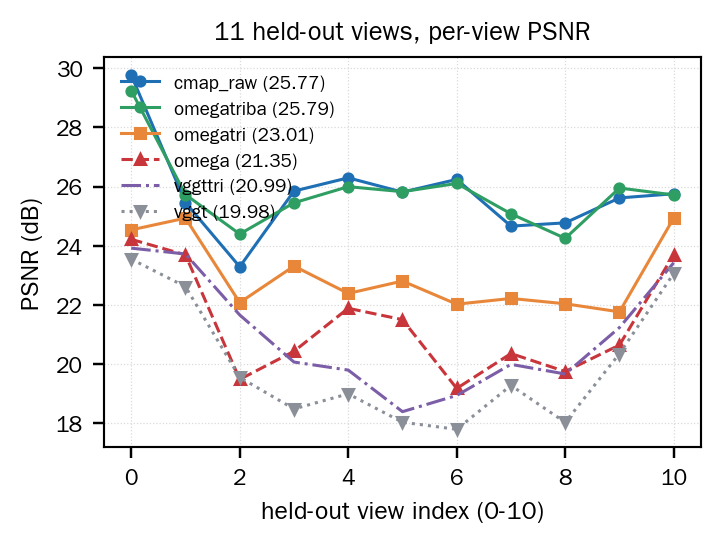
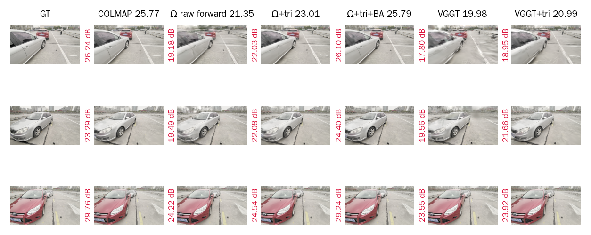
| Run | Wall clock (s) | Final cost (px) | Note |
|---|---|---|---|
| colmap mapper (default BA) | 184 | 0.565 | 2 sub-models / 83 images / 32 690 points |
| mapper (BA iterations off) | 87 | 1.648 | 83 images / 37 315 points |
| \(\Rightarrow\) BA inside the mapper | \(\approx\)97 (53%) | — | 35 global + \(\approx\)81 local calls, \(\approx\)1 s each |
| our BA round 1 (30 iterations) | 57 | 0.33855 | bit-identical to 60/100 iterations |
| our BA round 1 (100 iterations) | 142 | 0.33855 | NO_CONVERGENCE |
| our BA round 1 (300 iterations) | 171.6 | 0.37900 | PSNR 25.08 vs 24.97: noise |
| point_filtering + BA round 2 (50) | 24 | 0.31747 | CONVERGENCE (18 iterations) |
| self-generated-track BA (1.91 M observations) | 291 | 0.256 | CONVERGENCE, but poses get worse |
COLMAP’s “BA is the slowest stage” comes from BA being called repeatedly inside incremental mapping; we demote BA to a single solve at the end of inference — lowering the round-1 cap from 100 to 30 saves 85 s with a bit-identical solution.
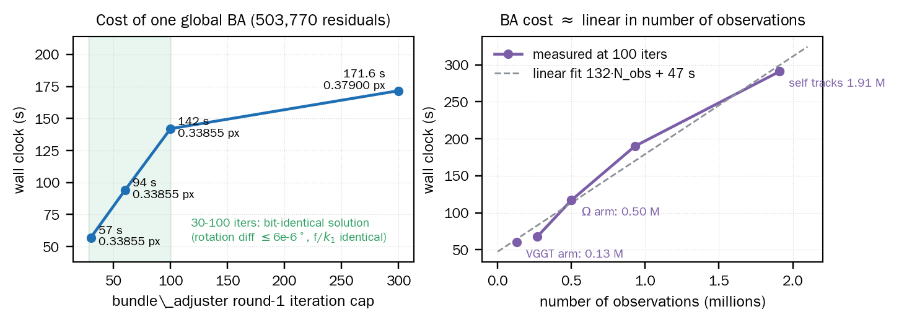
The A/B experiment in Table 7 (same
database.db, same container, idle machine, 8 threads) shows
that COLMAP’s BA accounts for \(\approx97\text{s}\) (\(53\%\)) of the mapper, but that this is the
accumulated cost of \(35\)
global plus \(\approx81\) local calls,
\(1\text{s}\) on average. Note that the
mapper sets print_summary to false[2], so no
BA report appears in the log — which is why “BA is the slowest stage”
could never be confirmed from logs; BA inside the COLMAP 4.0.4 mapper is
also synchronous and serial, not overlapped with the registration
loop.
We demote BA to two global solves at the end of inference: round 1
(30 iterations) \(57\text{s}\),
filtering \(3\text{s}\), round 2 (cap
\(50\), converges after \(18\) iterations) \(21\text{s}\), plus \(22\text{s}\) of triangulation, i.e. \(\approx106\text{s}\) in total; keeping 100
iterations in round 1 gives \(\approx191\text{s}\). The cost is linear in
the number of observations (Fig. 13, right), so
it can be compressed further by
--Mapper.tri_ignore_two_view_tracks 1 (drop short tracks)
or by switching to a sequential_matcher.
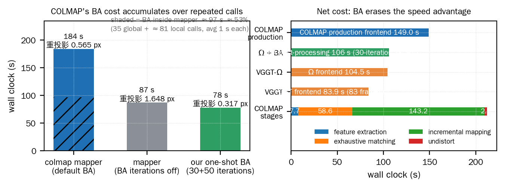
Fig. 14 (right) gives the front-end net bill (83 frames): COLMAP production script \(148.96\text{s}\); VGGT front-end \(83.90\text{s}\), \(\approx194\text{s}\) with BA (\(\approx144\text{s}\) for the 30-iteration variant); \(\Omega\) front-end \(104.50\text{s}\), \(\approx296\text{s}\) with BA (\(\approx211\text{s}\) for the 30-iteration variant). In other words, on material that COLMAP can map without trouble, the motivation “use a network to save time” largely stops holding once BA is added. Training is unaffected by the front-end (\(7\,000\) steps: \(159\)–\(203\text{s}\) on one card, fewer points being faster); the three end-to-end chains (front-end \(+\) training \(+\) rendering \(+\) evaluation) take \(537.19\text{s}\) (COLMAP), \(465.74\text{s}\) (VGGT) and \(554.23\text{s}\) (\(\Omega\)).
So where is the value of a network front-end? On this sequence we see three candidates: (i) all frames registered: the network registers \(83/83\) whereas the mapper produces \(2\) sub-models and \(221\) registration attempts on the same data (the cost of the failed retries is not even counted in the successful path); (ii) budgetable cost: we have exactly two deterministic terms, matching plus one BA, and no “failed registration / split / manual merge / re-run” term; (iii) initialization quality: the network provides a coherent bias, which makes “one global BA” a sufficient operation, whereas COLMAP has to find an initialization itself through the incremental loop. Whether these three properties outweigh the extra wall clock depends on the scene and on the production constraints; one observed registration failure shows that the failure mode exists, it does not show that a network front-end is generally more robust. Conversely, on material that COLMAP maps without trouble the net benefit of the network front-end is close to zero — a boundary we want to state explicitly.
Scope of the conclusions. We use two real videos: an 83-frame driving sequence (weakly textured ground, occluding vehicles), which carries the full \(20\)-arm matrix, and a 191-frame close-range orbit sequence (redcar, the seven-arm replication of §5.7); both are trained for \(7\,000\) steps under the same protocol. Absolute PSNR is not comparable with public benchmarks (both resolution and step count are far below 3DGS-paper settings), but differences between arms under identical settings are comparable, and we treat anything within \(\pm0.3\,\text{dB}\) as noise. The residual of VGGT, \(-1.13\,\text{dB}\) in protocol B, \(-0.67\,\text{dB}\) in protocol A and \(-0.58\,\text{dB}\) on the second scene, shows that one BA round does not fully bring the weaker VGGT initialization up to COLMAP level; the residual has the same magnitude (\(0.6\sim\!1.1\,\text{dB}\)) across two scenes and three training tiers, i.e. it is a systematic gap rather than a property of one clip.
Why one BA round absorbs feed-forward bias but not random perturbation. This is a direct consequence of the least-squares parameterisation and needs no extra machinery. The unknowns of BA are the \(7N\) camera parameters (plus \(2N\) intrinsics here) and the 3D points, so it can only shrink residuals along directions that the low-dimensional parameterised subspace can express. The error of a feed-forward network over one scene is coherent — one smooth drift, one systematically long focal length, distortion identically zero — which lies almost entirely inside what camera parameters can express, so a single Levenberg–Marquardt run absorbs it wholesale (\(+4.44\)/\(+5.12\,\text{dB}\) in Table 1). The artificial per-frame independent rotations we inject, by contrast, contain high-frequency components that shared camera parameters cannot express and can only be damped by adding independent observations, which is why the same angular magnitude produces a far steeper loss (\(-10.9\,\text{dB}/^\circ\) near the origin, Fig. 4 right). This is also why we do not read the perturbation curve as a measurement: it bounds how much pose error 3DGS tolerates, not how much of the front-end’s loss is attributable to pose. The operational corollary: the coherence of a front-end’s error bounds the gain of this kind of post-processing. If some future network produced white-noise-like per-frame pose error, this pipeline would not help as much; every current video-style feed-forward network outputs smooth trajectories, so the gain is systematic rather than lucky.
Relation to the VGGT-\(\Omega\) paper. \(\Omega\)’s accuracy numbers (camera AUC etc.) refer to the bare network output; the BA in the paper belongs to the annotation side and is driven by external correspondences[7]. Our contribution is therefore not “inventing something the paper lacks” but moving a classical component from the annotation stage to inference and proving it decisive for downstream 3DGS. There is a product implication: the public evaluation metrics of feed-forward networks (AUC, AbsRel) and downstream reconstructability have a gap — \(k_1\equiv0\) is the most typical instance, and \(+1.2\,\text{dB}\) of our own chain’s gain (protocol A\(\to\)B) comes almost entirely from it.
Open problems. (1) The network dense point map is
still useless for 3DGS initialization: as a replacement (graft) it costs
\(-2.8\) to \(-3.2\,\text{dB}\), and as a union (fusion,
Eq. [eq:fuse]) still \(-0.45\) to \(-1.13\,\text{dB}\) while inflating the
Gaussian count by \(77\%\) and training
wall-clock by \(75\%\) (Section 5.6); matching the injection quantile
only recovers part of it (\(-0.45\sim-0.55\,\text{dB}\)). What is
needed is dense geometry as a weighted soft constraint rather
than a point observation (a term \(\lambda\rho(\|X-\mathrm{proj}(X_{\text{net}})\|^2)\)
in the training objective, or modulating the densification threshold
where \(c>\tau\)); (2) we reuse the
SIFT database of the production pipeline, which is free for COLMAP users
but not for a setting that wants no matching at all — then another
independent source of correspondence is needed (LoFTR[11]/RAFT-style
dense matching, or temporal and IMU priors); (3) dynamic objects (moving
vehicles) form systematic outliers in the tracks, which we suppress with
point_filtering and a robust kernel but do not model.
On a domestic AI-accelerator platform we detached COLMAP’s “triangulation + bundle adjustment” from the incremental mapping loop and used them as a one-shot post-processing of a feed-forward front-end (VGGT / VGGT-\(\Omega\)): triangulate under frozen network poses to rebuild a 3D point set consistent with external SIFT observations, then run one global BA with poses, focal length and distortion free, with a point-filtering round in between and a second BA after it. These five steps alone recover \(4.4\)–\(7.5\,\text{dB}\) of the feed-forward front-end’s loss in 3DGS down to \(0.10\,\text{dB}\) (\(\Omega\)) and \(1.13\,\text{dB}\) (VGGT), and calibrate the distortion coefficients the network never estimates. We also state the two necessary conditions for this to work (correspondence must be independent of the network; the network dense cloud should enter neither the residuals nor the 3DGS initialization) and the price (on this sequence the front-end speed advantage largely disappears, so the case for the chain rests on a predictable post-processing cost and on scenes where incremental registration fails, not on raw speed). One of the four scenes also showed the other direction of the same story: on a closed-loop handheld video the incremental mapper failed silently — every frame registered, a plausible-looking model exported — and only a solver-failure count, a non-physical step profile and an image-based arbitration built outside both reconstructions exposed it, at which point our chain was \(+2.71\,\text{dB}\) better and \(3.9\times\) cheaper. For practitioners who want to replace an SfM front-end with a feed-forward network our recommendation is: use the network as a good initialization generator and keep classical BA at the end of inference, rather than expecting end-to-end replacement of the optimization.
Kerbl B, Kopanas G, Leimkühler T, Drettakis G. 3D Gaussian splatting for real-time radiance field rendering[J]. ACM Transactions on Graphics, 2023, 42(4): 139:1–139:14.
Schönberger J L, Frahm J M. Structure-from-motion revisited[C]//Proc. IEEE Conf. Computer Vision and Pattern Recognition (CVPR). 2016: 4104–4113.
Schönberger J L, Preisach G, Niemasz K, et al. Structure-from-motion with incremental mapping and bundle adjustment in the loop[C]//Eur. Conf. Computer Vision (ECCV). 2020.
Agarwal S, Mierle K, Szeliski R, et al. Bundle adjustment in the large: scalable modern implementations[C]//Eur. Conf. Computer Vision (ECCV). 2010.
Lowe D G. Distinctive image features from scale-invariant keypoints[J]. International Journal of Computer Vision, 2004, 60(2): 91–110.
Wang J, Chen M, Karaev N, Vedaldi A, Rupprecht C, Novotny D. VGGT: Visual geometry grounded transformer[C]//Proc. IEEE/CVF Conf. Computer Vision and Pattern Recognition (CVPR). 2025: 5942–5954. arXiv:2503.11651.
Wang J, Chen M, Zhang S, Karaev N, Schönberger J, Labatut P, Bojanowski P, Novotny D, Vedaldi A, Rupprecht C. VGGT-\(\Omega\)[EB/OL]. arXiv:2605.15195, 2026.
Wang S, Leroy V, Cabon Y, et al. DUSt3R: Geometric 3D vision made easy[C]//Proc. IEEE/CVF Conf. Computer Vision and Pattern Recognition (CVPR). 2024.
Sarlin P E, Cadena C, Siegwart R, Dymczyk R. SuperGlue: Learning feature matching with graph neural networks[C]//Proc. IEEE/CVF Conf. Computer Vision and Pattern Recognition (CVPR). 2020.
Lindenberger P, Arpinin S, Sarlin P E, et al. LightGlue: Local feature matching at light speed[C]//Proc. IEEE/CVF Int. Conf. Computer Vision (ICCV). 2023.
Sun J, Shen Z, Wang Y, et al. LoFTR: Detector-free local feature matching with transformers[C]//Proc. IEEE/CVF Conf. Computer Vision and Pattern Recognition (CVPR). 2021.
Lin H, Peng S, Sun H, et al. VGGSfM: Visual geometry grounded deep structure from motion[C]//Proc. IEEE/CVF Conf. Computer Vision and Pattern Recognition (CVPR). 2024.
Hahlbohm F, Franke L, Eisemann M, Magnor M. Faster-GS: Analyzing and improving Gaussian splatting optimization[EB/OL]. arXiv, 2026.
Trap 1: poses really live in
frames.bin. COLMAP 4 introduced the rig/frame
refactor; bundle_adjuster/point_triangulator
read rigs.bin \(+\)
frames.bin, where each frame record is
frame_id:i32 \(\vert\) rig_id:i32 \(\vert\) 7\(\times\)f64(\(q_w,q_x,q_y,q_z,t_x,t_y,t_z\)) \(\vert\) 20 B tail (\(84\text{B}\) per record in our case; derive
the record length as len(body)//n rather than hard-coding
it), and the \((q,t)\) in
images.bin are derived. Our first export script rewrote
only images.bin and copied frames.bin from the
COLMAP template \(\Rightarrow\) all
subsequent triangulation/BA silently used COLMAP’s own poses, the
network poses were ignored entirely, and we obtained a spurious
“\(\Omega\)+BA equals COLMAP” result.
Detection: compute the pose difference between the exported model and
the raw network model — if it is exactly \(0.0000^\circ\), the network poses were
never written. We have since audited the equivalence instead of
assuming it (stale_bin.py): across \(39\) models written by COLMAP 4.0.4 on
CoreX-5.0 and \(11\) by 4.1.1 on CUDA,
the legacy pose in images.bin agrees with the frame-derived
pose to \(0.000^\circ\) and \(0.0000\) in translation; and a synthetic
\(+5^\circ\) rotation injected into
images.bin alone leaves cam_from_world()
completely unchanged while the raw field moves by exactly \(5.000^\circ\), which proves the API reads
frames.bin and that the detection rule above has no false
negatives. One of our own alarms is retracted here: during the new-scene
runs a reader reported a \(9.4\)
disagreement between the two files, and it was a wrong record stride in
that reader, not COLMAP behaviour — the audit tool is therefore also a
regression test for the reader. Trap 2: the
cameras.bin model_id numbering differs from 3.x
(measured: 1=PINHOLE (4 parameters),
2=SIMPLE_RADIAL (4), 0=SIMPLE_PINHOLE (3));
parsing with 3.x numbering shifts \((f_x,f_y,c_x,c_y)\) by one slot. Robust
approach: infer the number of parameters from the file size.
Trap 3: the error field of a hand-written model
cannot be used for self-checks. model_analyzer
reports the mean reprojection error from the stored error
field (written as \(0\) by us);
self-checks must use the initial cost reported by
bundle_adjuster --max_num_iterations 1. Moreover the
output_path of
bundle_adjuster/point_filtering must
already exist, otherwise the run errors out and a later
point_filtering core-dumps; and
point_filtering options carry no
PointFiltering. prefix.
The full text of this appendix and of the cross-platform check
(main-paper Appendices B and C) lives in the companion file
appendix_en.tex / appendix_en.pdf; we
summarise the results here. The training backend is our port of
Faster-GS (inside nerficg) to Iluvatar CoreX-5.0. Measured against
upstream (ae2bf80) it is \(13\) files, \(+646/-177\) lines, plus a \(171\)-line compatibility header, whereas
the same tree on the L20 needs one functional line. Five root
causes, each with a measurable signature. (i) The hardware warp is \(64\) lanes wide but
__ballot_sync still returns a \(32\)-bit mask and __fns
crashes the vendor compiler, so Faster-GS’s warp-cooperative tile
enumeration fails silently (instances reserved \(\neq\) written \(\to\) holes in the instance buffer \(\to\) invalid tile keys \(\to\) n_buckets overflow); we
rewrite the primitives from absolute-source-lane shuffles and make every
early exit domain-uniform (\(89\)
tagged substitutions in \(5\) kernel
files; a kernel-internal counter then reports zero mismatches). (ii)
That cooperative path, although now correct, is not faster —
\(165\) s vs \(163\) s at \(0.25\times\), and \(267\) s vs \(259\) s at \(0.5\times\) in the same session, quality
equal up to float ordering — so the shipped default remains the plain
sequential enumeration (FGS_COOP32=1 re-enables it). (iii)
cub::DoubleBuffer::selector is not flipped consistently, so
Current() can hand back the unsorted buffer; we
pin it. (iv) The implicit ordering between a created stream and the
legacy default stream is not implemented, and that — not memory planning
— is the real cause of the reported
Tried to allocate 7687.50 GiB “OOM”: a racing memset
corrupts instance_ranges, hence n_buckets,
hence a numel overflow, which no amount of memory would
have satisfied. (v) Header and libcu++ gaps (std::max,
numeric_limits, ::nanf, and
cub::Max dropped by CUDA 13 on the other platform), plus
ENABLE_FASTMATH deliberately off so that the two platforms
stay bit-comparable. Faster-GS ships its own Adam, densification, 3D
filter, rasterizer and sort (\(4\,853\)
lines compiled into one extension) and never links
diff_gaussian_rasterization — hence the vendor’s
accel branch cannot influence this path; the only nerficg
CUDA piece it uses is the Morton encoder (\(0.7\) ms to encode,
torch.argsort \(6.2\) ms
at \(1.1\)M Gaussians, invoked at most
\(3\times\) in \(30\,000\) steps), i.e. the kernel that once
made nerficg runs take hours is off the critical path. We also eliminate
the most tempting explanation for the residual \(2\times\) gap: idle cards report \(500\) MHz against a \(1750\) MHz maximum, but under load they run
at \(1750\) MHz at \(78\)–\(98\) W of a \(450\) W cap with \(84\)–\(100\%\) utilisation — no clock lock and no
power cap, so the remaining \(41\) vs
\(85\) it/s difference belongs to code
generation and microarchitecture, not to configuration.
The three headline configurations re-run verbatim on an NVIDIA L20 (CUDA 13.0, PyTorch 2.13, dedicated card) agree with the Iluvatar results to \(\le0.21\,\text{dB}\), below our \(0.3\,\text{dB}\) re-run floor; SSIM and LPIPS match configuration by configuration, Gaussian counts agree within \(0.7\%\), and “\(\Omega\) + triangulation + BA equals COLMAP” holds on CUDA as well (\(25.77\) vs \(25.62\)). The L20 is only \(10\)–\(23\%\) faster end to end, because the ported backend approaches it and because data loading plus evaluation is about a third of the wall clock. Caveat: the L20 arms ran sequentially on one card while the Iluvatar matrix ran one dedicated card per arm, so absolute wall times are nominal.
The full version of this appendix — branch genealogy and code-level
attribution, the call-convention trap, the crossover, the sparse-Adam
measurement and both result tables — lives in the companion file
appendix_en.tex / appendix_en.pdf; the
headline is that the accelerator vendor’s claim that an “optimized 3DGS
rasterizer” makes Faster-GS redundant does not survive measurement.
Attribution. The vendor’s accel branch is
byte-identical to upstream’s October-2024 integration of the Taming-3DGS
drop-in rasterizer (fused and sparse Adam, DC/residual-SH decoupling,
contribution-bound culling, per-tile bucketing); the vendor contribution
is the CoreX port, not rasterizer work. A trap that changes
conclusions. accel requires the split
dc/shs call convention, but nerficg still
calls it the legacy way; on strict CUDA the null pointer faults at
step 0, whereas on the accelerator’s unified-addressing runtime the call
silently succeeds and trains a different model (the DC term
frozen, every higher-order SH coefficient shifted by one slot).
Repairing the three call sites moves the accelerator’s \(7{,}000\)-step result from \(24.59\,\text{dB}\) to \(24.96\,\text{dB}\), makes it \(16\%\) faster, and collapses the previously
reported “platform quality gap” from \(\approx0.4\,\text{dB}\) to \(0.04\,\text{dB}\): it was a wiring bug, not
hardware. Any cross-vendor accuracy comparison must therefore verify the
backend’s call convention first. Measurements. The
accel branch has a resolution/density crossover:
inside nerficg at \(0.25\times\) it is
a net loss (\(233\) s vs \(196\) s), at \(0.5\times\) a \(1.28\times\) gain (\(288\!\to\!225\) s on the L20), and at \(0.25\times/30\,000\) steps a gain again
(\(847\!\to\!807\) s) — a published
rasterizer speedup is meaningless without the resolution and point-count
it was measured at. Sparse Adam, which we had to wire into nerficg
ourselves, is worth \(16\)–\(19\%\) in the native driver but
nothing inside nerficg, whose single fused Adam over all
parameter groups already beats the baseline sparse Adam was designed to
improve on. The dominant knobs are the backend algorithm and the driver:
Faster-GS, which never links diff_gaussian_rasterization,
is \(1.3\)–\(2.1\times\) faster than the best
classic arm at equal quality, and its margin survives the higher
resolution. Recommended configuration (identical on both
platforms). nerficg driver \(+\) Faster-GS backend \(+\) fixed call convention: \(147\) s (L20) and \(196\) s (accelerator) for \(0.25\times/7{,}000\) steps, \(159\) s and \(272\) s at \(0.5\times\). If the accel
branch is enabled anywhere, the split-convention patch is mandatory, not
optional, and must be verified per platform — one platform crashes, the
other silently returns a different model.
The code/ directory (identical to
/root/cmp_test/wzong_eval/bin/ inside the container):
run_matrix.sh (20-arm matrix, dedicated
MODEL_NAME and GPU per arm), run_ba_arm.sh
(route A in one shot: export \(\to\)
triangulate \(\to\) BA \(\to\) filter \(\to\) BA \(\to\) filter \(\to\) graft \(\to\) configs), run_tier.sh
(quality tiers l/m/h: only resolution and iteration count change),
run_undist_arm.sh (protocol B), run_one.sh
(training \(+\) held-out evaluation),
colmap_frames.py
(frames.bin/cameras.bin reading and pose
rewriting), mk_vggt_sparse2.py (network poses \(\to\) COLMAP model),
mk_grid_tracks.py (route B self-generated tracks),
mk_ba_plus_vgpts.py (Sim3 graft of the network cloud),
mk_fused_sparse.py (union fusion: SIFT points \(\cup\) confidence-filtered network points),
geom_diff.py (Umeyama pose/intrinsic residuals),
cmpba2.py (bitwise comparison of two BA solutions),
ba_vs_mapper.sh/ba_ab.sh (BA cost A/B),
perview.py (per-view PSNR), paper_meta.py
(metadata and track-length statistics). Scenes 3–4
(code/scenes/, code/pipeline/run_front.sh /
run_arm31.sh / run_train31.sh /
extract_frames.py): fwd_omega.py (batched
VGGT-\(\Omega\) forward pass),
mkcfg31.py (derives the four nerficg configs of a scene
from one template), ba_health.py (parses a mapper log into
wall clocks, global-BA rounds and Linear solver failure
counts), geom_diff2.py (frame-derived poses only; Umeyama
residuals plus the per-frame step-profile cv — the successor of
geom_diff.py), pair_reproj_check.py (§5.9: DLT of shared SIFT inlier pairs
under each candidate, with the paired-subset and win-rate tables),
stale_bin.py (the
images.bin/frames.bin audit of appendix 9), dump_traj.py (trajectory
export for Figs. 8 and 10).
Figures and tables: tools/make_figs.py,
tools/make_fig12.py, tools/make_fig13.py and
tools/make_fig14.py (FIG_LANG=en for the
English version). Key commands:
colmap point_triangulator --database_path $DB \
--image_path $IMG \
--input_path $M --output_path $M --clear_points 1 \
--refine_intrinsics 0 --Mapper.tri_min_angle 0.5 \
--Mapper.tri_ignore_two_view_tracks 0 \
--Mapper.num_threads 8
colmap bundle_adjuster --input_path $IN --output_path $OUT \
--BundleAdjustment.refine_focal_length 1 \
--BundleAdjustment.refine_extra_params 1 \
--BundleAdjustmentCeres.max_num_iterations 30
colmap point_filtering --input_path $IN --output_path $OUT \
--max_reproj_error 4 --min_tri_angle 1.5
# note: no PointFiltering. option prefixTable [tab:all] lists every arm of the clean matrix (protocol A/B, ablations and the perturbation arms) so that any difference quoted in the text can be verified. The “3D initialization” column is exactly where we and the official feed-forward BA disagree: theirs looks the network dense point map up at the query-frame pixel, ours triangulates external SIFT inliers under frozen poses.
| Arm | Front-end configuration | 3D initialization | PSNR \(\uparrow\) | SSIM \(\uparrow\) | LPIPS \(\downarrow\) | Gaussians |
|---|---|---|---|---|---|---|
| Protocol A (raw distorted images) | ||||||
| cmap_raw | COLMAP full pipeline (reference) | COLMAP SIFT+BA | 25.77 | 0.837 | 0.234 | 626616 |
| omega | \(\Omega\) raw forward (network point map) | none (network point map) | 21.35 | 0.674 | 0.326 | 697889 |
| omegatri | \(\Omega\) + triangulation (frozen poses) | SIFT triangulation | 23.01 | 0.741 | 0.290 | 651023 |
| omegatriba | \(\Omega\) + triangulation + BA (ours) | SIFT triangulation+BA | 25.79 | 0.843 | 0.219 | 634702 |
| omegatriba_vgpts | \(\Omega\) + BA, initialized with network point map | SIFT triangulation+BA | 22.99 | 0.766 | 0.264 | 715366 |
| vggt | VGGT raw forward (network point map) | none (network point map) | 19.98 | 0.596 | 0.427 | 635674 |
| vggttri | VGGT + triangulation (frozen poses) | SIFT triangulation | 20.99 | 0.641 | 0.372 | 627185 |
| vggttriba | VGGT + triangulation + BA (ours) | SIFT triangulation+BA | 25.10 | 0.811 | 0.253 | — |
| vggttrilong | VGGT + triangulation + BA, round-1 cap 300 | SIFT triangulation+BA | 25.02 | 0.811 | 0.255 | 622666 |
| vggttriba_vgpts | VGGT + BA, initialized with network point map | SIFT triangulation+BA | 21.90 | 0.709 | 0.341 | 695987 |
| vggtgrid | Route B: self-generated tracks (no BA) | self-projection of network point map | 19.99 | 0.600 | 0.407 | 621609 |
| vggtgridba | Route B: self-generated tracks + BA | self-projection of network point map | 20.04 | 0.601 | 0.403 | — |
| Protocol B (self-calibrated \(k_1\), undistorted) | ||||||
| cmap | COLMAP full pipeline (undistorted, reference) | COLMAP SIFT+BA | 26.82 | 0.877 | 0.203 | 477211 |
| omegau | \(\Omega\) raw forward (undistorted) | none (network point map) | 21.74 | 0.706 | 0.308 | 665745 |
| omegatribau | \(\Omega\) + triangulation + BA (undistorted, ours) | SIFT triangulation+BA | 26.72 | 0.875 | 0.198 | — |
| vggtu | VGGT raw forward (undistorted) | none (network point map) | 19.30 | 0.588 | 0.425 | 573660 |
| vggttribau | VGGT + triangulation + BA (undistorted, ours) | SIFT triangulation+BA | 25.69 | 0.836 | 0.236 | — |
| cp06 | Perturbation: COLMAP poses rotated by \(0.6^\circ\) | COLMAP SIFT+BA | 20.29 | 0.584 | 0.399 | 543342 |
| cp13 | Perturbation: rotation \(1.3^\circ\) | COLMAP SIFT+BA | 17.55 | 0.505 | 0.503 | 425435 |
| cp26 | Perturbation: rotation \(2.6^\circ\) | COLMAP SIFT+BA | 16.34 | 0.482 | 0.561 | 340567 |